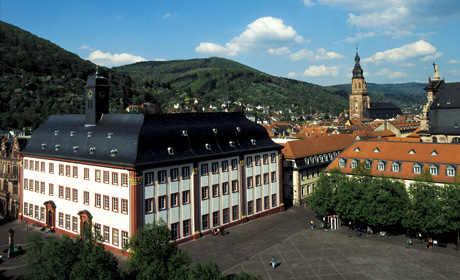

Universität・TU
総合大学・工科大学。研究と理論を重視し、博士課程への進学を考える際にも候補になります。TUも研究型大学の一種です。
UNIVERSITY RANKINGS
大学全体の評価と、学びたい分野の強み。
2つの視点から、進学先を比較する。
公式情報確認：2026-10-17
ドイツの大学・大学院選びに、QS・THE・ARWUの世界順位を比較できます。総合ランキングと分野別ランキングは別の評価です。専攻・授業言語・出願条件と合わせてご活用ください。
確認済みの公開表・大学プロフィールに基づく収録です。ドイツの全大学を網羅する一覧ではありません。
専攻分野は、収録した分野別ランキングがある大学を絞り込みます。学べる全専攻の一覧ではありません。
01 / OVERALL
3機関を横に並べて比較。大学名に「大学ガイドを読む」がある場合は、既存ガイドへ進めます。
77大学
横にスクロールして比較できます。未記載・未記載は末尾に表示。同じ順位帯の中に独自順位は付けません。
| 大学名 | 主な所在地・州 | QS 2027年版 | THE 2027年版 | ARWU 2026年版 |
|---|---|---|---|---|
| MünchenBayern主な所在地。学部・課程によりキャンパスが異なります。 | 25公式出典 ↗確認 2026-10-17 | 25公式出典 ↗確認 2026-10-17 | 45公式出典 ↗確認 2026-10-17 | |
| MünchenBayern主な所在地。学部・課程によりキャンパスが異なります。 | 61公式出典 ↗確認 2026-10-17 | 41公式出典 ↗確認 2026-10-17 | 49公式出典 ↗確認 2026-10-17 | |
 | HeidelbergBaden-Württemberg主な所在地。学部・課程によりキャンパスが異なります。 | 86公式出典 ↗確認 2026-10-17 | =45公式出典 ↗確認 2026-10-17 | 59公式出典 ↗確認 2026-10-17 |
| BerlinBerlin主な所在地。学部・課程によりキャンパスが異なります。 | =98公式出典 ↗確認 2026-10-17 | =113公式出典 ↗確認 2026-10-17 | 未記載公式出典 ↗確認 2026-10-17 | |
| AachenNordrhein-Westfalen主な所在地。学部・課程によりキャンパスが異なります。 | 104公式出典 ↗確認 2026-10-17 | 90公式出典 ↗確認 2026-10-17 | 201-300公式出典 ↗確認 2026-10-17 | |
 カールスルーエ工科大学（KIT）Karlsruhe Institute of Technology | KarlsruheBaden-Württemberg主な所在地。学部・課程によりキャンパスが異なります。 | 110公式出典 ↗確認 2026-10-17 | =143公式出典 ↗確認 2026-10-17 | 201-300公式出典 ↗確認 2026-10-17 |
 ベルリン・フンボルト大学Humboldt University of Berlin | BerlinBerlin主な所在地。学部・課程によりキャンパスが異なります。 | =140公式出典 ↗確認 2026-10-17 | 91公式出典 ↗確認 2026-10-17 | 未記載公式出典 ↗確認 2026-10-17 |
 ベルリン工科大学Technical University of Berlin | BerlinBerlin主な所在地。学部・課程によりキャンパスが異なります。 | =158公式出典 ↗確認 2026-10-17 | =171公式出典 ↗確認 2026-10-17 | 201-300公式出典 ↗確認 2026-10-17 |
 ドレスデン工科大学TU Dresden | DresdenSachsen主な所在地。学部・課程によりキャンパスが異なります。 | =185公式出典 ↗確認 2026-10-17 | =168公式出典 ↗確認 2026-10-17 | 151-200公式出典 ↗確認 2026-10-17 |
| BonnNordrhein-Westfalen主な所在地。学部・課程によりキャンパスが異なります。 | =209公式出典 ↗確認 2026-10-17 | 89公式出典 ↗確認 2026-10-17 | 69公式出典 ↗確認 2026-10-17 | |
 ハンブルク大学University of Hamburg | HamburgHamburg主な所在地。学部・課程によりキャンパスが異なります。 | =209公式出典 ↗確認 2026-10-17 | =129公式出典 ↗確認 2026-10-17 | 201-300公式出典 ↗確認 2026-10-17 |
 エアランゲン＝ニュルンベルク大学University of Erlangen-Nuremberg | ErlangenBayern主な所在地。学部・課程によりキャンパスが異なります。 | =218公式出典 ↗確認 2026-10-17 | =201公式出典 ↗確認 2026-10-17 | 201-300公式出典 ↗確認 2026-10-17 |
 テュービンゲン大学University of Tübingen | TübingenBaden-Württemberg主な所在地。学部・課程によりキャンパスが異なります。 | =230公式出典 ↗確認 2026-10-17 | =101公式出典 ↗確認 2026-10-17 | 151-200公式出典 ↗確認 2026-10-17 |
 フライブルク大学University of Freiburg | Freiburg im BreisgauBaden-Württemberg主な所在地。学部・課程によりキャンパスが異なります。 | 245公式出典 ↗確認 2026-10-17 | =139公式出典 ↗確認 2026-10-17 | 101-150公式出典 ↗確認 2026-10-17 |
 ダルムシュタット工科大学Technical University of Darmstadt | DarmstadtHessen主な所在地。学部・課程によりキャンパスが異なります。 | 250公式出典 ↗確認 2026-10-17 | =284公式出典 ↗確認 2026-10-17 | 501-600公式出典 ↗確認 2026-10-17 |
 ゲッティンゲン大学University of Göttingen | GöttingenNiedersachsen主な所在地。学部・課程によりキャンパスが異なります。 | =261公式出典 ↗確認 2026-10-17 | =133公式出典 ↗確認 2026-10-17 | 151-200公式出典 ↗確認 2026-10-17 |
 ケルン大学University of Cologne | KölnNordrhein-Westfalen主な所在地。学部・課程によりキャンパスが異なります。 | 269公式出典 ↗確認 2026-10-17 | =163公式出典 ↗確認 2026-10-17 | 151-200公式出典 ↗確認 2026-10-17 |
 シュトゥットガルト大学University of Stuttgart | StuttgartBaden-Württemberg主な所在地。学部・課程によりキャンパスが異なります。 | =318公式出典 ↗確認 2026-10-17 | 301-325公式出典 ↗確認 2026-10-17 | 301-400公式出典 ↗確認 2026-10-17 |
 ミュンスター大学University of Münster2023年にUniversität Münsterへ改称。QS出典では旧名表記を使用。 | MünsterNordrhein-Westfalen主な所在地。学部・課程によりキャンパスが異なります。 | =370公式出典 ↗確認 2026-10-17 | =194公式出典 ↗確認 2026-10-17 | 151-200公式出典 ↗確認 2026-10-17 |
 フランクフルト大学Goethe University Frankfurt | Frankfurt am MainHessen主な所在地。学部・課程によりキャンパスが異なります。 | =376公式出典 ↗確認 2026-10-17 | 193公式出典 ↗確認 2026-10-17 | 151-200公式出典 ↗確認 2026-10-17 |
 ルール大学ボーフムRuhr University Bochum | BochumNordrhein-Westfalen主な所在地。学部・課程によりキャンパスが異なります。 | =402公式出典 ↗確認 2026-10-17 | =261公式出典 ↗確認 2026-10-17 | 301-400公式出典 ↗確認 2026-10-17 |
 コンスタンツ大学University of Konstanz | KonstanzBaden-Württemberg主な所在地。学部・課程によりキャンパスが異なります。 | =425公式出典 ↗確認 2026-10-17 | =275公式出典 ↗確認 2026-10-17 | 401-500公式出典 ↗確認 2026-10-17 |
 マンハイム大学University of Mannheim | MannheimBaden-Württemberg主な所在地。学部・課程によりキャンパスが異なります。 | =425公式出典 ↗確認 2026-10-17 | =224公式出典 ↗確認 2026-10-17 | 701-800公式出典 ↗確認 2026-10-17 |
 ヴュルツブルク大学University of Würzburg | WürzburgBayern主な所在地。学部・課程によりキャンパスが異なります。 | 430公式出典 ↗確認 2026-10-17 | 182公式出典 ↗確認 2026-10-17 | 201-300公式出典 ↗確認 2026-10-17 |
 ハノーファー大学Leibniz University Hannover | HannoverNiedersachsen主な所在地。学部・課程によりキャンパスが異なります。 | =470公式出典 ↗確認 2026-10-17 | 351-375公式出典 ↗確認 2026-10-17 | 401-500公式出典 ↗確認 2026-10-17 |
| BayreuthBayern主キャンパスはBayreuth。食品・生命科学関連の一部課程はKulmbach。 | 472公式出典 ↗確認 2026-10-17 | 301-325公式出典 ↗確認 2026-10-17 | 401-500公式出典 ↗確認 2026-10-17 | |
 マインツ大学Johannes Gutenberg University of Mainz | MainzRheinland-Pfalz主な所在地。学部・課程によりキャンパスが異なります。 | =500公式出典 ↗確認 2026-10-17 | =296公式出典 ↗確認 2026-10-17 | 201-300公式出典 ↗確認 2026-10-17 |
 ポツダム大学University of Potsdam | PotsdamBrandenburg主な所在地。学部・課程によりキャンパスが異なります。 | =500公式出典 ↗確認 2026-10-17 | =247公式出典 ↗確認 2026-10-17 | 301-400公式出典 ↗確認 2026-10-17 |
 ギーセン大学Justus Liebig University Giessen | GießenHessen主な所在地。学部・課程によりキャンパスが異なります。 | =521公式出典 ↗確認 2026-10-17 | 401-450公式出典 ↗確認 2026-10-17 | 401-500公式出典 ↗確認 2026-10-17 |
 ライプツィヒ大学University of Leipzig | LeipzigSachsen主な所在地。学部・課程によりキャンパスが異なります。 | =540公式出典 ↗確認 2026-10-17 | 未記載公式出典 ↗確認 2026-10-17 | 201-300公式出典 ↗確認 2026-10-17 |
 イェーナ大学Friedrich Schiller University Jena | JenaThüringen主な所在地。学部・課程によりキャンパスが異なります。 | =567公式出典 ↗確認 2026-10-17 | 217公式出典 ↗確認 2026-10-17 | 401-500公式出典 ↗確認 2026-10-17 |
 ウルム大学Ulm University | UlmBaden-Württemberg主な所在地。学部・課程によりキャンパスが異なります。 | =575公式出典 ↗確認 2026-10-17 | =239公式出典 ↗確認 2026-10-17 | 401-500公式出典 ↗確認 2026-10-17 |
 ブレーメン大学University of Bremen | BremenBremen主な所在地。学部・課程によりキャンパスが異なります。 | =581公式出典 ↗確認 2026-10-17 | 351-375公式出典 ↗確認 2026-10-17 | 501-600公式出典 ↗確認 2026-10-17 |
 ザールラント大学Saarland University | SaarbrückenSaarland主な所在地。学部・課程によりキャンパスが異なります。 | =588公式出典 ↗確認 2026-10-17 | 401-450公式出典 ↗確認 2026-10-17 | 401-500公式出典 ↗確認 2026-10-17 |
 フライベルク工科大学TU Bergakademie Freiberg | FreibergSachsen主な所在地。学部・課程によりキャンパスが異なります。 | 594公式出典 ↗確認 2026-10-17 | 未記載公式出典 ↗確認 2026-10-17 | 未記載公式出典 ↗確認 2026-10-17 |
 キール大学University of Kiel | KielSchleswig-Holstein主な所在地。学部・課程によりキャンパスが異なります。 | =620公式出典 ↗確認 2026-10-17 | 401-450公式出典 ↗確認 2026-10-17 | 201-300公式出典 ↗確認 2026-10-17 |
 マクデブルク大学Otto von Guericke University of Magdeburg | MagdeburgSachsen-Anhalt主な所在地。学部・課程によりキャンパスが異なります。 | =646公式出典 ↗確認 2026-10-17 | 651-700公式出典 ↗確認 2026-10-17 | 801-900公式出典 ↗確認 2026-10-17 |
 ドルトムント工科大学TU Dortmund University | DortmundNordrhein-Westfalen主な所在地。学部・課程によりキャンパスが異なります。 | =691公式出典 ↗確認 2026-10-17 | 451-500公式出典 ↗確認 2026-10-17 | 601-700公式出典 ↗確認 2026-10-17 |
 レーゲンスブルク大学University of Regensburg | RegensburgBayern主な所在地。学部・課程によりキャンパスが異なります。 | =696公式出典 ↗確認 2026-10-17 | 451-500公式出典 ↗確認 2026-10-17 | 401-500公式出典 ↗確認 2026-10-17 |
| HamburgHamburg主な所在地。学部・課程によりキャンパスが異なります。 | 721-730公式出典 ↗確認 2026-10-17 | 551-600公式出典 ↗確認 2026-10-17 | 未記載公式出典 ↗確認 2026-10-17 | |
 ホーエンハイム大学University of Hohenheim | StuttgartBaden-Württemberg主な所在地。学部・課程によりキャンパスが異なります。 | 771-780公式出典 ↗確認 2026-10-17 | 376-400公式出典 ↗確認 2026-10-17 | 701-800公式出典 ↗確認 2026-10-17 |
 ブラウンシュヴァイク工科大学TU Braunschweig | BraunschweigNiedersachsen主な所在地。学部・課程によりキャンパスが異なります。 | 781-790公式出典 ↗確認 2026-10-17 | 651-700公式出典 ↗確認 2026-10-17 | 701-800公式出典 ↗確認 2026-10-17 |
 ハレ＝ヴィッテンベルク大学Martin Luther University Halle-Wittenberg | Halle (Saale)Sachsen-Anhalt主な所在地。学部・課程によりキャンパスが異なります。 | 801-850公式出典 ↗確認 2026-10-17 | 未記載公式出典 ↗確認 2026-10-17 | 401-500公式出典 ↗確認 2026-10-17 |
 デュースブルク＝エッセン大学University of Duisburg-Essen | Duisburg / EssenNordrhein-Westfalen主な所在地。学部・課程によりキャンパスが異なります。 | 801-850公式出典 ↗確認 2026-10-17 | =292公式出典 ↗確認 2026-10-17 | 301-400公式出典 ↗確認 2026-10-17 |
 ロストック大学University of Rostock | RostockMecklenburg-Vorpommern主な所在地。学部・課程によりキャンパスが異なります。 | 901-950公式出典 ↗確認 2026-10-17 | 未記載公式出典 ↗確認 2026-10-17 | 501-600公式出典 ↗確認 2026-10-17 |
 デュッセルドルフ大学Heinrich Heine University Düsseldorf | DüsseldorfNordrhein-Westfalen主な所在地。学部・課程によりキャンパスが異なります。 | 951-1000公式出典 ↗確認 2026-10-17 | =284公式出典 ↗確認 2026-10-17 | 201-300公式出典 ↗確認 2026-10-17 |
 マールブルク大学University of Marburg | MarburgHessen主な所在地。学部・課程によりキャンパスが異なります。 | 951-1000公式出典 ↗確認 2026-10-17 | 376-400公式出典 ↗確認 2026-10-17 | 301-400公式出典 ↗確認 2026-10-17 |
 ビーレフェルト大学Bielefeld University | BielefeldNordrhein-Westfalen主な所在地。学部・課程によりキャンパスが異なります。 | 1001-1200公式出典 ↗確認 2026-10-17 | 未記載公式出典 ↗確認 2026-10-17 | 801-900公式出典 ↗確認 2026-10-17 |
 ケムニッツ工科大学Chemnitz University of Technology | ChemnitzSachsen主な所在地。学部・課程によりキャンパスが異なります。 | 1001-1200公式出典 ↗確認 2026-10-17 | 未記載公式出典 ↗確認 2026-10-17 | 未記載公式出典 ↗確認 2026-10-17 |
 オルデンブルク大学University of Oldenburg | OldenburgNiedersachsen主な所在地。学部・課程によりキャンパスが異なります。 | 1001-1200公式出典 ↗確認 2026-10-17 | 未記載公式出典 ↗確認 2026-10-17 | 501-600公式出典 ↗確認 2026-10-17 |
 ヴッパータール大学University of Wuppertal | WuppertalNordrhein-Westfalen主な所在地。学部・課程によりキャンパスが異なります。 | 1001-1200公式出典 ↗確認 2026-10-17 | 601-650公式出典 ↗確認 2026-10-17 | 901-1000公式出典 ↗確認 2026-10-17 |
 パーダーボルン大学Paderborn University | PaderbornNordrhein-Westfalen主な所在地。学部・課程によりキャンパスが異なります。 | 1201-1400公式出典 ↗確認 2026-10-17 | 601-650公式出典 ↗確認 2026-10-17 | 未記載公式出典 ↗確認 2026-10-17 |
 バンベルク大学University of Bamberg | BambergBayern主な所在地。学部・課程によりキャンパスが異なります。 | 1201-1400公式出典 ↗確認 2026-10-17 | 未記載公式出典 ↗確認 2026-10-17 | 未記載公式出典 ↗確認 2026-10-17 |
 カッセル大学University of Kassel | KasselHessen主な所在地。学部・課程によりキャンパスが異なります。 | 1201-1400公式出典 ↗確認 2026-10-17 | 未記載公式出典 ↗確認 2026-10-17 | 801-900公式出典 ↗確認 2026-10-17 |
 パッサウ大学University of Passau | PassauBayern主な所在地。学部・課程によりキャンパスが異なります。 | 1201-1400公式出典 ↗確認 2026-10-17 | 601-650公式出典 ↗確認 2026-10-17 | 未記載公式出典 ↗確認 2026-10-17 |
 ジーゲン大学University of Siegen | SiegenNordrhein-Westfalen主な所在地。学部・課程によりキャンパスが異なります。 | 1201-1400公式出典 ↗確認 2026-10-17 | 501-550公式出典 ↗確認 2026-10-17 | 未記載公式出典 ↗確認 2026-10-17 |
 カイザースラウテルン＝ランダウ工科大学（RPTU）RPTU University Kaiserslautern-Landau2023年発足。QSの旧名「Technische Universität Kaiserslautern」を同一校の出典表記として保存。 | Kaiserslautern / LandauRheinland-Pfalz主な所在地。学部・課程によりキャンパスが異なります。 | 1401+公式出典 ↗確認 2026-10-17 | 601-650公式出典 ↗確認 2026-10-17 | 701-800公式出典 ↗確認 2026-10-17 |
 アウクスブルク大学University of Augsburg | AugsburgBayern主な所在地。学部・課程によりキャンパスが異なります。 | 1401+公式出典 ↗確認 2026-10-17 | 未記載公式出典 ↗確認 2026-10-17 | 601-700公式出典 ↗確認 2026-10-17 |
 トリーア大学University of Trier | TrierRheinland-Pfalz主な所在地。学部・課程によりキャンパスが異なります。 | 1401+公式出典 ↗確認 2026-10-17 | 未記載公式出典 ↗確認 2026-10-17 | 未記載公式出典 ↗確認 2026-10-17 |
| StuttgartBaden-Württemberg本部所在地Stuttgart。州内の複数拠点でデュアル教育を実施。 | 未記載公式出典 ↗確認 2026-10-17 | 未記載公式出典 ↗確認 2026-10-17 | 未記載公式出典 ↗確認 2026-10-17 | |
 バウハウス大学ヴァイマルBauhaus University Weimar | WeimarThüringen主な所在地。学部・課程によりキャンパスが異なります。 | 未記載公式出典 ↗確認 2026-10-17 | 未記載公式出典 ↗確認 2026-10-17 | 未記載公式出典 ↗確認 2026-10-17 |
| ベルリン芸術大学Berlin University of the Arts | BerlinBerlin主な所在地。学部・課程によりキャンパスが異なります。 | 未記載公式出典 ↗確認 2026-10-17 | 未記載公式出典 ↗確認 2026-10-17 | 未記載公式出典 ↗確認 2026-10-17 |
 ブランデンブルク工科大学Brandenburg University of Technology Cottbus-Senftenberg | Cottbus / SenftenbergBrandenburg主な所在地。学部・課程によりキャンパスが異なります。 | 未記載公式出典 ↗確認 2026-10-17 | 801-1000公式出典 ↗確認 2026-10-17 | 未記載公式出典 ↗確認 2026-10-17 |
| シャリテ・ベルリン医科大学Charité – Universitätsmedizin Berlin | BerlinBerlin主な所在地。学部・課程によりキャンパスが異なります。 | 未記載公式出典 ↗確認 2026-10-17 | 94公式出典 ↗確認 2026-10-17 | 未記載公式出典 ↗確認 2026-10-17 |
 クラウスタール工科大学Clausthal University of Technology | Clausthal-ZellerfeldNiedersachsen主な所在地。学部・課程によりキャンパスが異なります。 | 未記載公式出典 ↗確認 2026-10-17 | 1001-1200公式出典 ↗確認 2026-10-17 | 未記載公式出典 ↗確認 2026-10-17 |
 コンストラクター大学Constructor University | BremenBremen主な所在地。学部・課程によりキャンパスが異なります。 | 未記載公式出典 ↗確認 2026-10-17 | 376-400公式出典 ↗確認 2026-10-17 | 未記載公式出典 ↗確認 2026-10-17 |
| ESMTベルリンESMT Berlin | BerlinBerlin主な所在地。学部・課程によりキャンパスが異なります。 | 未記載公式出典 ↗確認 2026-10-17 | 未記載公式出典 ↗確認 2026-10-17 | 未記載公式出典 ↗確認 2026-10-17 |
| フランクフルト・スクールFrankfurt School of Finance & Management | Frankfurt am MainHessen主な所在地。学部・課程によりキャンパスが異なります。 | 未記載公式出典 ↗確認 2026-10-17 | 未記載公式出典 ↗確認 2026-10-17 | 未記載公式出典 ↗確認 2026-10-17 |
 ハノーファー医科大学Hannover Medical School | HannoverNiedersachsen主な所在地。学部・課程によりキャンパスが異なります。 | 未記載公式出典 ↗確認 2026-10-17 | 未記載公式出典 ↗確認 2026-10-17 | 501-600公式出典 ↗確認 2026-10-17 |
| ErfurtThüringen本部所在地Erfurt。ガイドではMünchen等のキャンパス・デュアル課程を紹介。 | 未記載公式出典 ↗確認 2026-10-17 | 未記載公式出典 ↗確認 2026-10-17 | 未記載公式出典 ↗確認 2026-10-17 | |
 ロイファナ大学リューネブルクLeuphana University of Lüneburg | LüneburgNiedersachsen主な所在地。学部・課程によりキャンパスが異なります。 | 未記載公式出典 ↗確認 2026-10-17 | 501-550公式出典 ↗確認 2026-10-17 | 未記載公式出典 ↗確認 2026-10-17 |
| ミュンヘン・ビジネススクールMunich Business School | MünchenBayern主な所在地。学部・課程によりキャンパスが異なります。 | 未記載公式出典 ↗確認 2026-10-17 | 未記載公式出典 ↗確認 2026-10-17 | 未記載公式出典 ↗確認 2026-10-17 |
 グライフスヴァルト大学University of Greifswald | GreifswaldMecklenburg-Vorpommern主な所在地。学部・課程によりキャンパスが異なります。 | 未記載公式出典 ↗確認 2026-10-17 | 501-550公式出典 ↗確認 2026-10-17 | 未記載公式出典 ↗確認 2026-10-17 |
 ハーゲン通信大学University of Hagen | HagenNordrhein-Westfalen主な所在地。学部・課程によりキャンパスが異なります。 | 未記載公式出典 ↗確認 2026-10-17 | 801-1000公式出典 ↗確認 2026-10-17 | 未記載公式出典 ↗確認 2026-10-17 |
 リューベック大学University of Lübeck | LübeckSchleswig-Holstein主な所在地。学部・課程によりキャンパスが異なります。 | 未記載公式出典 ↗確認 2026-10-17 | 未記載公式出典 ↗確認 2026-10-17 | 501-600公式出典 ↗確認 2026-10-17 |
| OsnabrückNiedersachsen主な所在地。学部・課程によりキャンパスが異なります。 | 未記載公式出典 ↗確認 2026-10-17 | 未記載公式出典 ↗確認 2026-10-17 | 未記載公式出典 ↗確認 2026-10-17 | |
| WHU経営大学WHU – Otto Beisheim School of Management | Vallendar / DüsseldorfRheinland-Pfalz主な所在地。学部・課程によりキャンパスが異なります。 | 未記載公式出典 ↗確認 2026-10-17 | 未記載公式出典 ↗確認 2026-10-17 | 未記載公式出典 ↗確認 2026-10-17 |
該当する大学がありません。検索条件を変更してください。
02 / BY SUBJECT
同じ評価機関・年度・正式な分野名で比較してください。工学全体と建築、コンピューター科学とAIは、それぞれ別の分野です。
661件
初期表示はQSの分野別です。THEに切り替えると教育学・心理学・生命科学なども比較できます。異なる分野・機関の順位を合算していません。
| 大学名・所在地 | 正式な分野名 | 機関・年度 | 世界順位 | 確認日・出典 |
|---|---|---|---|---|
ホーエンハイム大学University of HohenheimStuttgart · Baden-Württemberg | 農学・林学Agriculture & Forestry | QS2026年版 | 17 | 公式出典 ↗確認 2026-10-17 |
ゲッティンゲン大学University of GöttingenGöttingen · Niedersachsen | 農学・林学Agriculture & Forestry | QS2026年版 | 21 | 公式出典 ↗確認 2026-10-17 |
 ミュンヘン工科大学（TUM）Technical University of Munich大学ガイドを読む →München · Bayern | 農学・林学Agriculture & Forestry | QS2026年版 | =43 | 公式出典 ↗確認 2026-10-17 |
 ボン大学University of Bonn大学ガイドを読む →Bonn · Nordrhein-Westfalen | 農学・林学Agriculture & Forestry | QS2026年版 | =54 | 公式出典 ↗確認 2026-10-17 |
フライブルク大学University of FreiburgFreiburg im Breisgau · Baden-Württemberg | 農学・林学Agriculture & Forestry | QS2026年版 | =89 | 公式出典 ↗確認 2026-10-17 |
ベルリン・フンボルト大学Humboldt University of BerlinBerlin · Berlin | 農学・林学Agriculture & Forestry | QS2026年版 | 101-150 | 公式出典 ↗確認 2026-10-17 |
ギーセン大学Justus Liebig University GiessenGießen · Hessen | 農学・林学Agriculture & Forestry | QS2026年版 | 101-150 | 公式出典 ↗確認 2026-10-17 |
ハレ＝ヴィッテンベルク大学Martin Luther University Halle-WittenbergHalle (Saale) · Sachsen-Anhalt | 農学・林学Agriculture & Forestry | QS2026年版 | 101-150 | 公式出典 ↗確認 2026-10-17 |
キール大学University of KielKiel · Schleswig-Holstein | 農学・林学Agriculture & Forestry | QS2026年版 | 101-150 | 公式出典 ↗確認 2026-10-17 |
ドレスデン工科大学TU DresdenDresden · Sachsen | 農学・林学Agriculture & Forestry | QS2026年版 | 201-250 | 公式出典 ↗確認 2026-10-17 |
ミュンスター大学University of MünsterMünster · Nordrhein-Westfalen | 農学・林学Agriculture & Forestry | QS2026年版 | 301-350 | 公式出典 ↗確認 2026-10-17 |
ロストック大学University of RostockRostock · Mecklenburg-Vorpommern | 農学・林学Agriculture & Forestry | QS2026年版 | 401-475 | 公式出典 ↗確認 2026-10-17 |
ベルリン工科大学Technical University of BerlinBerlin · Berlin | 建築学・建造環境Architecture & Built Environment | QS2026年版 | 24 | 公式出典 ↗確認 2026-10-17 |
ミュンヘン工科大学（TUM）Technical University of Munich大学ガイドを読む →München · Bayern | 建築学・建造環境Architecture & Built Environment | QS2026年版 | 25 | 公式出典 ↗確認 2026-10-17 |
カールスルーエ工科大学（KIT）Karlsruhe Institute of TechnologyKarlsruhe · Baden-Württemberg | 建築学・建造環境Architecture & Built Environment | QS2026年版 | 51-100 | 公式出典 ↗確認 2026-10-17 |
 アーヘン工科大学（RWTH）RWTH Aachen University大学ガイドを読む →Aachen · Nordrhein-Westfalen | 建築学・建造環境Architecture & Built Environment | QS2026年版 | 51-100 | 公式出典 ↗確認 2026-10-17 |
ダルムシュタット工科大学Technical University of DarmstadtDarmstadt · Hessen | 建築学・建造環境Architecture & Built Environment | QS2026年版 | 51-100 | 公式出典 ↗確認 2026-10-17 |
シュトゥットガルト大学University of StuttgartStuttgart · Baden-Württemberg | 建築学・建造環境Architecture & Built Environment | QS2026年版 | 51-100 | 公式出典 ↗確認 2026-10-17 |
バウハウス大学ヴァイマルBauhaus University WeimarWeimar · Thüringen | 建築学・建造環境Architecture & Built Environment | QS2026年版 | 101-150 | 公式出典 ↗確認 2026-10-17 |
ドレスデン工科大学TU DresdenDresden · Sachsen | 建築学・建造環境Architecture & Built Environment | QS2026年版 | 101-150 | 公式出典 ↗確認 2026-10-17 |
ブラウンシュヴァイク工科大学TU BraunschweigBraunschweig · Niedersachsen | 建築学・建造環境Architecture & Built Environment | QS2026年版 | 151-200 | 公式出典 ↗確認 2026-10-17 |
ドルトムント工科大学TU Dortmund UniversityDortmund · Nordrhein-Westfalen | 建築学・建造環境Architecture & Built Environment | QS2026年版 | 151-200 | 公式出典 ↗確認 2026-10-17 |
ハノーファー大学Leibniz University HannoverHannover · Niedersachsen | 建築学・建造環境Architecture & Built Environment | QS2026年版 | 201-260 | 公式出典 ↗確認 2026-10-17 |
ベルリン・フンボルト大学Humboldt University of BerlinBerlin · Berlin | 芸術・人文科学Arts & Humanities | QS2026年版 | =24 | 公式出典 ↗確認 2026-10-17 |
 ベルリン自由大学Free University of Berlin大学ガイドを読む →Berlin · Berlin | 芸術・人文科学Arts & Humanities | QS2026年版 | 30 | 公式出典 ↗確認 2026-10-17 |
 ミュンヘン大学（LMU）LMU Munich大学ガイドを読む →München · Bayern | 芸術・人文科学Arts & Humanities | QS2026年版 | =35 | 公式出典 ↗確認 2026-10-17 |
ハイデルベルク大学Heidelberg University大学ガイドを読む →Heidelberg · Baden-Württemberg | 芸術・人文科学Arts & Humanities | QS2026年版 | 68 | 公式出典 ↗確認 2026-10-17 |
テュービンゲン大学University of TübingenTübingen · Baden-Württemberg | 芸術・人文科学Arts & Humanities | QS2026年版 | =88 | 公式出典 ↗確認 2026-10-17 |
ハンブルク大学University of HamburgHamburg · Hamburg | 芸術・人文科学Arts & Humanities | QS2026年版 | =138 | 公式出典 ↗確認 2026-10-17 |
ケルン大学University of CologneKöln · Nordrhein-Westfalen | 芸術・人文科学Arts & Humanities | QS2026年版 | =146 | 公式出典 ↗確認 2026-10-17 |
フライブルク大学University of FreiburgFreiburg im Breisgau · Baden-Württemberg | 芸術・人文科学Arts & Humanities | QS2026年版 | =149 | 公式出典 ↗確認 2026-10-17 |
フランクフルト大学Goethe University FrankfurtFrankfurt am Main · Hessen | 芸術・人文科学Arts & Humanities | QS2026年版 | =168 | 公式出典 ↗確認 2026-10-17 |
ゲッティンゲン大学University of GöttingenGöttingen · Niedersachsen | 芸術・人文科学Arts & Humanities | QS2026年版 | =201 | 公式出典 ↗確認 2026-10-17 |
ボン大学University of Bonn大学ガイドを読む →Bonn · Nordrhein-Westfalen | 芸術・人文科学Arts & Humanities | QS2026年版 | =206 | 公式出典 ↗確認 2026-10-17 |
マインツ大学Johannes Gutenberg University of MainzMainz · Rheinland-Pfalz | 芸術・人文科学Arts & Humanities | QS2026年版 | =225 | 公式出典 ↗確認 2026-10-17 |
ミュンスター大学University of MünsterMünster · Nordrhein-Westfalen | 芸術・人文科学Arts & Humanities | QS2026年版 | =231 | 公式出典 ↗確認 2026-10-17 |
ライプツィヒ大学University of LeipzigLeipzig · Sachsen | 芸術・人文科学Arts & Humanities | QS2026年版 | =265 | 公式出典 ↗確認 2026-10-17 |
ルール大学ボーフムRuhr University BochumBochum · Nordrhein-Westfalen | 芸術・人文科学Arts & Humanities | QS2026年版 | =297 | 公式出典 ↗確認 2026-10-17 |
ベルリン工科大学Technical University of BerlinBerlin · Berlin | 芸術・人文科学Arts & Humanities | QS2026年版 | =345 | 公式出典 ↗確認 2026-10-17 |
コンスタンツ大学University of KonstanzKonstanz · Baden-Württemberg | 芸術・人文科学Arts & Humanities | QS2026年版 | =396 | 公式出典 ↗確認 2026-10-17 |
エアランゲン＝ニュルンベルク大学University of Erlangen-NurembergErlangen · Bayern | 芸術・人文科学Arts & Humanities | QS2026年版 | 401-450 | 公式出典 ↗確認 2026-10-17 |
キール大学University of KielKiel · Schleswig-Holstein | 芸術・人文科学Arts & Humanities | QS2026年版 | 401-450 | 公式出典 ↗確認 2026-10-17 |
| ベルリン芸術大学Berlin University of the ArtsBerlin · Berlin | 芸術・人文科学Arts & Humanities | QS2026年版 | 501-550 | 公式出典 ↗確認 2026-10-17 |
イェーナ大学Friedrich Schiller University JenaJena · Thüringen | 芸術・人文科学Arts & Humanities | QS2026年版 | 501-550 | 公式出典 ↗確認 2026-10-17 |
ブレーメン大学University of BremenBremen · Bremen | 芸術・人文科学Arts & Humanities | QS2026年版 | 501-550 | 公式出典 ↗確認 2026-10-17 |
ポツダム大学University of PotsdamPotsdam · Brandenburg | 芸術・人文科学Arts & Humanities | QS2026年版 | 501-550 | 公式出典 ↗確認 2026-10-17 |
シュトゥットガルト大学University of StuttgartStuttgart · Baden-Württemberg | 芸術・人文科学Arts & Humanities | QS2026年版 | 501-550 | 公式出典 ↗確認 2026-10-17 |
ミュンヘン大学（LMU）LMU Munich大学ガイドを読む →München · Bayern | 芸術・人文科学Arts and Humanities | THE2026年版 | 15 | 公式出典 ↗確認 2026-10-17 |
ベルリン・フンボルト大学Humboldt University of BerlinBerlin · Berlin | 芸術・人文科学Arts and Humanities | THE2026年版 | 23 | 公式出典 ↗確認 2026-10-17 |
ベルリン自由大学Free University of Berlin大学ガイドを読む →Berlin · Berlin | 芸術・人文科学Arts and Humanities | THE2026年版 | 26 | 公式出典 ↗確認 2026-10-17 |
テュービンゲン大学University of TübingenTübingen · Baden-Württemberg | 芸術・人文科学Arts and Humanities | THE2026年版 | 36 | 公式出典 ↗確認 2026-10-17 |
ハイデルベルク大学Heidelberg University大学ガイドを読む →Heidelberg · Baden-Württemberg | 芸術・人文科学Arts and Humanities | THE2026年版 | 37 | 公式出典 ↗確認 2026-10-17 |
ハンブルク大学University of HamburgHamburg · Hamburg | 芸術・人文科学Arts and Humanities | THE2026年版 | 77 | 公式出典 ↗確認 2026-10-17 |
ケルン大学University of CologneKöln · Nordrhein-Westfalen | 芸術・人文科学Arts and Humanities | THE2026年版 | =97 | 公式出典 ↗確認 2026-10-17 |
フライブルク大学University of FreiburgFreiburg im Breisgau · Baden-Württemberg | 芸術・人文科学Arts and Humanities | THE2026年版 | 101-125 | 公式出典 ↗確認 2026-10-17 |
フランクフルト大学Goethe University FrankfurtFrankfurt am Main · Hessen | 芸術・人文科学Arts and Humanities | THE2026年版 | 126-150 | 公式出典 ↗確認 2026-10-17 |
ゲッティンゲン大学University of GöttingenGöttingen · Niedersachsen | 芸術・人文科学Arts and Humanities | THE2026年版 | 126-150 | 公式出典 ↗確認 2026-10-17 |
コンスタンツ大学University of KonstanzKonstanz · Baden-Württemberg | 芸術・人文科学Arts and Humanities | THE2026年版 | 126-150 | 公式出典 ↗確認 2026-10-17 |
ミュンスター大学University of MünsterMünster · Nordrhein-Westfalen | 芸術・人文科学Arts and Humanities | THE2026年版 | 126-150 | 公式出典 ↗確認 2026-10-17 |
ルール大学ボーフムRuhr University BochumBochum · Nordrhein-Westfalen | 芸術・人文科学Arts and Humanities | THE2026年版 | 151-175 | 公式出典 ↗確認 2026-10-17 |
ベルリン工科大学Technical University of BerlinBerlin · Berlin | 芸術・人文科学Arts and Humanities | THE2026年版 | 151-175 | 公式出典 ↗確認 2026-10-17 |
ポツダム大学University of PotsdamPotsdam · Brandenburg | 芸術・人文科学Arts and Humanities | THE2026年版 | 151-175 | 公式出典 ↗確認 2026-10-17 |
イェーナ大学Friedrich Schiller University JenaJena · Thüringen | 芸術・人文科学Arts and Humanities | THE2026年版 | 176-200 | 公式出典 ↗確認 2026-10-17 |
ボン大学University of Bonn大学ガイドを読む →Bonn · Nordrhein-Westfalen | 芸術・人文科学Arts and Humanities | THE2026年版 | 176-200 | 公式出典 ↗確認 2026-10-17 |
マインツ大学Johannes Gutenberg University of MainzMainz · Rheinland-Pfalz | 芸術・人文科学Arts and Humanities | THE2026年版 | 201-250 | 公式出典 ↗確認 2026-10-17 |
エアランゲン＝ニュルンベルク大学University of Erlangen-NurembergErlangen · Bayern | 芸術・人文科学Arts and Humanities | THE2026年版 | 201-250 | 公式出典 ↗確認 2026-10-17 |
キール大学University of KielKiel · Schleswig-Holstein | 芸術・人文科学Arts and Humanities | THE2026年版 | 201-250 | 公式出典 ↗確認 2026-10-17 |
マンハイム大学University of MannheimMannheim · Baden-Württemberg | 芸術・人文科学Arts and Humanities | THE2026年版 | 201-250 | 公式出典 ↗確認 2026-10-17 |
ヴュルツブルク大学University of WürzburgWürzburg · Bayern | 芸術・人文科学Arts and Humanities | THE2026年版 | 201-250 | 公式出典 ↗確認 2026-10-17 |
カールスルーエ工科大学（KIT）Karlsruhe Institute of TechnologyKarlsruhe · Baden-Württemberg | 芸術・人文科学Arts and Humanities | THE2026年版 | 251-300 | 公式出典 ↗確認 2026-10-17 |
ハノーファー大学Leibniz University HannoverHannover · Niedersachsen | 芸術・人文科学Arts and Humanities | THE2026年版 | 251-300 | 公式出典 ↗確認 2026-10-17 |
 バイロイト大学University of Bayreuth大学ガイドを読む →Bayreuth · Bayern | 芸術・人文科学Arts and Humanities | THE2026年版 | 251-300 | 公式出典 ↗確認 2026-10-17 |
ブレーメン大学University of BremenBremen · Bremen | 芸術・人文科学Arts and Humanities | THE2026年版 | 251-300 | 公式出典 ↗確認 2026-10-17 |
シュトゥットガルト大学University of StuttgartStuttgart · Baden-Württemberg | 芸術・人文科学Arts and Humanities | THE2026年版 | 251-300 | 公式出典 ↗確認 2026-10-17 |
デュッセルドルフ大学Heinrich Heine University DüsseldorfDüsseldorf · Nordrhein-Westfalen | 芸術・人文科学Arts and Humanities | THE2026年版 | 301-400 | 公式出典 ↗確認 2026-10-17 |
ギーセン大学Justus Liebig University GiessenGießen · Hessen | 芸術・人文科学Arts and Humanities | THE2026年版 | 301-400 | 公式出典 ↗確認 2026-10-17 |
ドレスデン工科大学TU DresdenDresden · Sachsen | 芸術・人文科学Arts and Humanities | THE2026年版 | 301-400 | 公式出典 ↗確認 2026-10-17 |
マールブルク大学University of MarburgMarburg · Hessen | 芸術・人文科学Arts and Humanities | THE2026年版 | 301-400 | 公式出典 ↗確認 2026-10-17 |
レーゲンスブルク大学University of RegensburgRegensburg · Bayern | 芸術・人文科学Arts and Humanities | THE2026年版 | 301-400 | 公式出典 ↗確認 2026-10-17 |
ドルトムント工科大学TU Dortmund UniversityDortmund · Nordrhein-Westfalen | 芸術・人文科学Arts and Humanities | THE2026年版 | 401-500 | 公式出典 ↗確認 2026-10-17 |
デュースブルク＝エッセン大学University of Duisburg-EssenDuisburg / Essen · Nordrhein-Westfalen | 芸術・人文科学Arts and Humanities | THE2026年版 | 401-500 | 公式出典 ↗確認 2026-10-17 |
パーダーボルン大学Paderborn UniversityPaderborn · Nordrhein-Westfalen | 芸術・人文科学Arts and Humanities | THE2026年版 | 501-600 | 公式出典 ↗確認 2026-10-17 |
ザールラント大学Saarland UniversitySaarbrücken · Saarland | 芸術・人文科学Arts and Humanities | THE2026年版 | 501-600 | 公式出典 ↗確認 2026-10-17 |
グライフスヴァルト大学University of GreifswaldGreifswald · Mecklenburg-Vorpommern | 芸術・人文科学Arts and Humanities | THE2026年版 | 501-600 | 公式出典 ↗確認 2026-10-17 |
ジーゲン大学University of SiegenSiegen · Nordrhein-Westfalen | 芸術・人文科学Arts and Humanities | THE2026年版 | 501-600 | 公式出典 ↗確認 2026-10-17 |
ヴッパータール大学University of WuppertalWuppertal · Nordrhein-Westfalen | 芸術・人文科学Arts and Humanities | THE2026年版 | 501-600 | 公式出典 ↗確認 2026-10-17 |
ミュンヘン工科大学（TUM）Technical University of Munich大学ガイドを読む →München · Bayern | 経営学Business & Management Studies | QS2026年版 | =91 | 公式出典 ↗確認 2026-10-17 |
マンハイム大学University of MannheimMannheim · Baden-Württemberg | 経営学Business & Management Studies | QS2026年版 | =104 | 公式出典 ↗確認 2026-10-17 |
| WHU経営大学WHU – Otto Beisheim School of ManagementVallendar / Düsseldorf · Rheinland-Pfalz | 経営学Business & Management Studies | QS2026年版 | =123 | 公式出典 ↗確認 2026-10-17 |
ミュンヘン大学（LMU）LMU Munich大学ガイドを読む →München · Bayern | 経営学Business & Management Studies | QS2026年版 | 151-200 | 公式出典 ↗確認 2026-10-17 |
アーヘン工科大学（RWTH）RWTH Aachen University大学ガイドを読む →Aachen · Nordrhein-Westfalen | 経営学Business & Management Studies | QS2026年版 | 251-300 | 公式出典 ↗確認 2026-10-17 |
ベルリン自由大学Free University of Berlin大学ガイドを読む →Berlin · Berlin | 経営学Business & Management Studies | QS2026年版 | 301-350 | 公式出典 ↗確認 2026-10-17 |
ベルリン・フンボルト大学Humboldt University of BerlinBerlin · Berlin | 経営学Business & Management Studies | QS2026年版 | 301-350 | 公式出典 ↗確認 2026-10-17 |
ケルン大学University of CologneKöln · Nordrhein-Westfalen | 経営学Business & Management Studies | QS2026年版 | 301-350 | 公式出典 ↗確認 2026-10-17 |
| フランクフルト・スクールFrankfurt School of Finance & ManagementFrankfurt am Main · Hessen | 経営学Business & Management Studies | QS2026年版 | 351-400 | 公式出典 ↗確認 2026-10-17 |
カールスルーエ工科大学（KIT）Karlsruhe Institute of TechnologyKarlsruhe · Baden-Württemberg | 経営学Business & Management Studies | QS2026年版 | 351-400 | 公式出典 ↗確認 2026-10-17 |
ハンブルク大学University of HamburgHamburg · Hamburg | 経営学Business & Management Studies | QS2026年版 | 351-400 | 公式出典 ↗確認 2026-10-17 |
| ESMTベルリンESMT BerlinBerlin · Berlin | 経営学Business & Management Studies | QS2026年版 | 401-450 | 公式出典 ↗確認 2026-10-17 |
ベルリン工科大学Technical University of BerlinBerlin · Berlin | 経営学Business & Management Studies | QS2026年版 | 401-450 | 公式出典 ↗確認 2026-10-17 |
ミュンスター大学University of MünsterMünster · Nordrhein-Westfalen | 経営学Business & Management Studies | QS2026年版 | 401-450 | 公式出典 ↗確認 2026-10-17 |
フランクフルト大学Goethe University FrankfurtFrankfurt am Main · Hessen | 経営学Business & Management Studies | QS2026年版 | 451-500 | 公式出典 ↗確認 2026-10-17 |
| ミュンヘン・ビジネススクールMunich Business SchoolMünchen · Bayern | 経営学Business & Management Studies | QS2026年版 | 501-550 | 公式出典 ↗確認 2026-10-17 |
エアランゲン＝ニュルンベルク大学University of Erlangen-NurembergErlangen · Bayern | 経営学Business & Management Studies | QS2026年版 | 501-550 | 公式出典 ↗確認 2026-10-17 |
 ハンブルク工科大学Hamburg University of Technology大学ガイドを読む →Hamburg · Hamburg | 経営学Business & Management Studies | QS2026年版 | 551-600 | 公式出典 ↗確認 2026-10-17 |
ドレスデン工科大学TU DresdenDresden · Sachsen | 経営学Business & Management Studies | QS2026年版 | 601-650 | 公式出典 ↗確認 2026-10-17 |
ミュンヘン工科大学（TUM）Technical University of Munich大学ガイドを読む →München · Bayern | 経営・経済Business and Economics | THE2026年版 | 29 | 公式出典 ↗確認 2026-10-17 |
マンハイム大学University of MannheimMannheim · Baden-Württemberg | 経営・経済Business and Economics | THE2026年版 | 33 | 公式出典 ↗確認 2026-10-17 |
ミュンヘン大学（LMU）LMU Munich大学ガイドを読む →München · Bayern | 経営・経済Business and Economics | THE2026年版 | 39 | 公式出典 ↗確認 2026-10-17 |
ボン大学University of Bonn大学ガイドを読む →Bonn · Nordrhein-Westfalen | 経営・経済Business and Economics | THE2026年版 | 73 | 公式出典 ↗確認 2026-10-17 |
ハンブルク工科大学Hamburg University of Technology大学ガイドを読む →Hamburg · Hamburg | 経営・経済Business and Economics | THE2026年版 | 126-150 | 公式出典 ↗確認 2026-10-17 |
ケルン大学University of CologneKöln · Nordrhein-Westfalen | 経営・経済Business and Economics | THE2026年版 | 126-150 | 公式出典 ↗確認 2026-10-17 |
ハンブルク大学University of HamburgHamburg · Hamburg | 経営・経済Business and Economics | THE2026年版 | 126-150 | 公式出典 ↗確認 2026-10-17 |
ベルリン工科大学Technical University of BerlinBerlin · Berlin | 経営・経済Business and Economics | THE2026年版 | 151-175 | 公式出典 ↗確認 2026-10-17 |
ベルリン自由大学Free University of Berlin大学ガイドを読む →Berlin · Berlin | 経営・経済Business and Economics | THE2026年版 | 176-200 | 公式出典 ↗確認 2026-10-17 |
カールスルーエ工科大学（KIT）Karlsruhe Institute of TechnologyKarlsruhe · Baden-Württemberg | 経営・経済Business and Economics | THE2026年版 | 176-200 | 公式出典 ↗確認 2026-10-17 |
バイロイト大学University of Bayreuth大学ガイドを読む →Bayreuth · Bayern | 経営・経済Business and Economics | THE2026年版 | 176-200 | 公式出典 ↗確認 2026-10-17 |
エアランゲン＝ニュルンベルク大学University of Erlangen-NurembergErlangen · Bayern | 経営・経済Business and Economics | THE2026年版 | 201-250 | 公式出典 ↗確認 2026-10-17 |
パッサウ大学University of PassauPassau · Bayern | 経営・経済Business and Economics | THE2026年版 | 201-250 | 公式出典 ↗確認 2026-10-17 |
フランクフルト大学Goethe University FrankfurtFrankfurt am Main · Hessen | 経営・経済Business and Economics | THE2026年版 | 251-300 | 公式出典 ↗確認 2026-10-17 |
ロイファナ大学リューネブルクLeuphana University of LüneburgLüneburg · Niedersachsen | 経営・経済Business and Economics | THE2026年版 | 251-300 | 公式出典 ↗確認 2026-10-17 |
ホーエンハイム大学University of HohenheimStuttgart · Baden-Württemberg | 経営・経済Business and Economics | THE2026年版 | 251-300 | 公式出典 ↗確認 2026-10-17 |
コンスタンツ大学University of KonstanzKonstanz · Baden-Württemberg | 経営・経済Business and Economics | THE2026年版 | 251-300 | 公式出典 ↗確認 2026-10-17 |
ドルトムント工科大学TU Dortmund UniversityDortmund · Nordrhein-Westfalen | 経営・経済Business and Economics | THE2026年版 | 301-400 | 公式出典 ↗確認 2026-10-17 |
ハノーファー大学Leibniz University HannoverHannover · Niedersachsen | 経営・経済Business and Economics | THE2026年版 | 401-500 | 公式出典 ↗確認 2026-10-17 |
マクデブルク大学Otto von Guericke University of MagdeburgMagdeburg · Sachsen-Anhalt | 経営・経済Business and Economics | THE2026年版 | 401-500 | 公式出典 ↗確認 2026-10-17 |
キール大学University of KielKiel · Schleswig-Holstein | 経営・経済Business and Economics | THE2026年版 | 401-500 | 公式出典 ↗確認 2026-10-17 |
ジーゲン大学University of SiegenSiegen · Nordrhein-Westfalen | 経営・経済Business and Economics | THE2026年版 | 401-500 | 公式出典 ↗確認 2026-10-17 |
パーダーボルン大学Paderborn UniversityPaderborn · Nordrhein-Westfalen | 経営・経済Business and Economics | THE2026年版 | 501-600 | 公式出典 ↗確認 2026-10-17 |
ザールラント大学Saarland UniversitySaarbrücken · Saarland | 経営・経済Business and Economics | THE2026年版 | 501-600 | 公式出典 ↗確認 2026-10-17 |
ヴッパータール大学University of WuppertalWuppertal · Nordrhein-Westfalen | 経営・経済Business and Economics | THE2026年版 | 501-600 | 公式出典 ↗確認 2026-10-17 |
ウルム大学Ulm UniversityUlm · Baden-Württemberg | 経営・経済Business and Economics | THE2026年版 | 601-800 | 公式出典 ↗確認 2026-10-17 |
ハーゲン通信大学University of HagenHagen · Nordrhein-Westfalen | 経営・経済Business and Economics | THE2026年版 | 601-800 | 公式出典 ↗確認 2026-10-17 |
マインツ大学Johannes Gutenberg University of MainzMainz · Rheinland-Pfalz | 経営・経済Business and Economics | THE2026年版 | 801-1000 | 公式出典 ↗確認 2026-10-17 |
ミュンヘン工科大学（TUM）Technical University of Munich大学ガイドを読む →München · Bayern | コンピューター科学Computer Science | THE2026年版 | 15 | 公式出典 ↗確認 2026-10-17 |
ミュンヘン大学（LMU）LMU Munich大学ガイドを読む →München · Bayern | コンピューター科学Computer Science | THE2026年版 | 50 | 公式出典 ↗確認 2026-10-17 |
アーヘン工科大学（RWTH）RWTH Aachen University大学ガイドを読む →Aachen · Nordrhein-Westfalen | コンピューター科学Computer Science | THE2026年版 | 62 | 公式出典 ↗確認 2026-10-17 |
ベルリン工科大学Technical University of BerlinBerlin · Berlin | コンピューター科学Computer Science | THE2026年版 | 73 | 公式出典 ↗確認 2026-10-17 |
ダルムシュタット工科大学Technical University of DarmstadtDarmstadt · Hessen | コンピューター科学Computer Science | THE2026年版 | 75 | 公式出典 ↗確認 2026-10-17 |
カールスルーエ工科大学（KIT）Karlsruhe Institute of TechnologyKarlsruhe · Baden-Württemberg | コンピューター科学Computer Science | THE2026年版 | =83 | 公式出典 ↗確認 2026-10-17 |
テュービンゲン大学University of TübingenTübingen · Baden-Württemberg | コンピューター科学Computer Science | THE2026年版 | =89 | 公式出典 ↗確認 2026-10-17 |
ハイデルベルク大学Heidelberg University大学ガイドを読む →Heidelberg · Baden-Württemberg | コンピューター科学Computer Science | THE2026年版 | 101-125 | 公式出典 ↗確認 2026-10-17 |
ルール大学ボーフムRuhr University BochumBochum · Nordrhein-Westfalen | コンピューター科学Computer Science | THE2026年版 | 101-125 | 公式出典 ↗確認 2026-10-17 |
ボン大学University of Bonn大学ガイドを読む →Bonn · Nordrhein-Westfalen | コンピューター科学Computer Science | THE2026年版 | 101-125 | 公式出典 ↗確認 2026-10-17 |
エアランゲン＝ニュルンベルク大学University of Erlangen-NurembergErlangen · Bayern | コンピューター科学Computer Science | THE2026年版 | 126-150 | 公式出典 ↗確認 2026-10-17 |
シュトゥットガルト大学University of StuttgartStuttgart · Baden-Württemberg | コンピューター科学Computer Science | THE2026年版 | 126-150 | 公式出典 ↗確認 2026-10-17 |
ドレスデン工科大学TU DresdenDresden · Sachsen | コンピューター科学Computer Science | THE2026年版 | 151-175 | 公式出典 ↗確認 2026-10-17 |
フライブルク大学University of FreiburgFreiburg im Breisgau · Baden-Württemberg | コンピューター科学Computer Science | THE2026年版 | 151-175 | 公式出典 ↗確認 2026-10-17 |
ヴュルツブルク大学University of WürzburgWürzburg · Bayern | コンピューター科学Computer Science | THE2026年版 | 151-175 | 公式出典 ↗確認 2026-10-17 |
ベルリン自由大学Free University of Berlin大学ガイドを読む →Berlin · Berlin | コンピューター科学Computer Science | THE2026年版 | 176-200 | 公式出典 ↗確認 2026-10-17 |
ハノーファー大学Leibniz University HannoverHannover · Niedersachsen | コンピューター科学Computer Science | THE2026年版 | 201-250 | 公式出典 ↗確認 2026-10-17 |
マンハイム大学University of MannheimMannheim · Baden-Württemberg | コンピューター科学Computer Science | THE2026年版 | 201-250 | 公式出典 ↗確認 2026-10-17 |
ベルリン・フンボルト大学Humboldt University of BerlinBerlin · Berlin | コンピューター科学Computer Science | THE2026年版 | 251-300 | 公式出典 ↗確認 2026-10-17 |
パーダーボルン大学Paderborn UniversityPaderborn · Nordrhein-Westfalen | コンピューター科学Computer Science | THE2026年版 | 251-300 | 公式出典 ↗確認 2026-10-17 |
カイザースラウテルン＝ランダウ工科大学（RPTU）RPTU University Kaiserslautern-LandauKaiserslautern / Landau · Rheinland-Pfalz | コンピューター科学Computer Science | THE2026年版 | 251-300 | 公式出典 ↗確認 2026-10-17 |
デュースブルク＝エッセン大学University of Duisburg-EssenDuisburg / Essen · Nordrhein-Westfalen | コンピューター科学Computer Science | THE2026年版 | 251-300 | 公式出典 ↗確認 2026-10-17 |
ポツダム大学University of PotsdamPotsdam · Brandenburg | コンピューター科学Computer Science | THE2026年版 | 251-300 | 公式出典 ↗確認 2026-10-17 |
ドルトムント工科大学TU Dortmund UniversityDortmund · Nordrhein-Westfalen | コンピューター科学Computer Science | THE2026年版 | 301-400 | 公式出典 ↗確認 2026-10-17 |
バイロイト大学University of Bayreuth大学ガイドを読む →Bayreuth · Bayern | コンピューター科学Computer Science | THE2026年版 | 301-400 | 公式出典 ↗確認 2026-10-17 |
ブレーメン大学University of BremenBremen · Bremen | コンピューター科学Computer Science | THE2026年版 | 301-400 | 公式出典 ↗確認 2026-10-17 |
ゲッティンゲン大学University of GöttingenGöttingen · Niedersachsen | コンピューター科学Computer Science | THE2026年版 | 301-400 | 公式出典 ↗確認 2026-10-17 |
ハンブルク大学University of HamburgHamburg · Hamburg | コンピューター科学Computer Science | THE2026年版 | 301-400 | 公式出典 ↗確認 2026-10-17 |
コンスタンツ大学University of KonstanzKonstanz · Baden-Württemberg | コンピューター科学Computer Science | THE2026年版 | 301-400 | 公式出典 ↗確認 2026-10-17 |
ジーゲン大学University of SiegenSiegen · Nordrhein-Westfalen | コンピューター科学Computer Science | THE2026年版 | 301-400 | 公式出典 ↗確認 2026-10-17 |
イェーナ大学Friedrich Schiller University JenaJena · Thüringen | コンピューター科学Computer Science | THE2026年版 | 401-500 | 公式出典 ↗確認 2026-10-17 |
ザールラント大学Saarland UniversitySaarbrücken · Saarland | コンピューター科学Computer Science | THE2026年版 | 401-500 | 公式出典 ↗確認 2026-10-17 |
ブラウンシュヴァイク工科大学TU BraunschweigBraunschweig · Niedersachsen | コンピューター科学Computer Science | THE2026年版 | 401-500 | 公式出典 ↗確認 2026-10-17 |
ウルム大学Ulm UniversityUlm · Baden-Württemberg | コンピューター科学Computer Science | THE2026年版 | 401-500 | 公式出典 ↗確認 2026-10-17 |
ミュンスター大学University of MünsterMünster · Nordrhein-Westfalen | コンピューター科学Computer Science | THE2026年版 | 401-500 | 公式出典 ↗確認 2026-10-17 |
パッサウ大学University of PassauPassau · Bayern | コンピューター科学Computer Science | THE2026年版 | 501-600 | 公式出典 ↗確認 2026-10-17 |
レーゲンスブルク大学University of RegensburgRegensburg · Bayern | コンピューター科学Computer Science | THE2026年版 | 501-600 | 公式出典 ↗確認 2026-10-17 |
フランクフルト大学Goethe University FrankfurtFrankfurt am Main · Hessen | コンピューター科学Computer Science | THE2026年版 | 601-800 | 公式出典 ↗確認 2026-10-17 |
ハンブルク工科大学Hamburg University of Technology大学ガイドを読む →Hamburg · Hamburg | コンピューター科学Computer Science | THE2026年版 | 601-800 | 公式出典 ↗確認 2026-10-17 |
デュッセルドルフ大学Heinrich Heine University DüsseldorfDüsseldorf · Nordrhein-Westfalen | コンピューター科学Computer Science | THE2026年版 | 601-800 | 公式出典 ↗確認 2026-10-17 |
マインツ大学Johannes Gutenberg University of MainzMainz · Rheinland-Pfalz | コンピューター科学Computer Science | THE2026年版 | 601-800 | 公式出典 ↗確認 2026-10-17 |
マクデブルク大学Otto von Guericke University of MagdeburgMagdeburg · Sachsen-Anhalt | コンピューター科学Computer Science | THE2026年版 | 601-800 | 公式出典 ↗確認 2026-10-17 |
ケルン大学University of CologneKöln · Nordrhein-Westfalen | コンピューター科学Computer Science | THE2026年版 | 601-800 | 公式出典 ↗確認 2026-10-17 |
マールブルク大学University of MarburgMarburg · Hessen | コンピューター科学Computer Science | THE2026年版 | 601-800 | 公式出典 ↗確認 2026-10-17 |
ハーゲン通信大学University of HagenHagen · Nordrhein-Westfalen | コンピューター科学Computer Science | THE2026年版 | 801-1000 | 公式出典 ↗確認 2026-10-17 |
キール大学University of KielKiel · Schleswig-Holstein | コンピューター科学Computer Science | THE2026年版 | 801-1000 | 公式出典 ↗確認 2026-10-17 |
ミュンヘン工科大学（TUM）Technical University of Munich大学ガイドを読む →München · Bayern | コンピューター科学・情報システムComputer Science & Information Systems | QS2026年版 | 26 | 公式出典 ↗確認 2026-10-17 |
ベルリン工科大学Technical University of BerlinBerlin · Berlin | コンピューター科学・情報システムComputer Science & Information Systems | QS2026年版 | =76 | 公式出典 ↗確認 2026-10-17 |
ミュンヘン大学（LMU）LMU Munich大学ガイドを読む →München · Bayern | コンピューター科学・情報システムComputer Science & Information Systems | QS2026年版 | =91 | 公式出典 ↗確認 2026-10-17 |
カールスルーエ工科大学（KIT）Karlsruhe Institute of TechnologyKarlsruhe · Baden-Württemberg | コンピューター科学・情報システムComputer Science & Information Systems | QS2026年版 | 110 | 公式出典 ↗確認 2026-10-17 |
アーヘン工科大学（RWTH）RWTH Aachen University大学ガイドを読む →Aachen · Nordrhein-Westfalen | コンピューター科学・情報システムComputer Science & Information Systems | QS2026年版 | =114 | 公式出典 ↗確認 2026-10-17 |
ベルリン・フンボルト大学Humboldt University of BerlinBerlin · Berlin | コンピューター科学・情報システムComputer Science & Information Systems | QS2026年版 | =149 | 公式出典 ↗確認 2026-10-17 |
ダルムシュタット工科大学Technical University of DarmstadtDarmstadt · Hessen | コンピューター科学・情報システムComputer Science & Information Systems | QS2026年版 | =156 | 公式出典 ↗確認 2026-10-17 |
ベルリン自由大学Free University of Berlin大学ガイドを読む →Berlin · Berlin | コンピューター科学・情報システムComputer Science & Information Systems | QS2026年版 | 201-250 | 公式出典 ↗確認 2026-10-17 |
ハイデルベルク大学Heidelberg University大学ガイドを読む →Heidelberg · Baden-Württemberg | コンピューター科学・情報システムComputer Science & Information Systems | QS2026年版 | 201-250 | 公式出典 ↗確認 2026-10-17 |
ドレスデン工科大学TU DresdenDresden · Sachsen | コンピューター科学・情報システムComputer Science & Information Systems | QS2026年版 | 201-250 | 公式出典 ↗確認 2026-10-17 |
ボン大学University of Bonn大学ガイドを読む →Bonn · Nordrhein-Westfalen | コンピューター科学・情報システムComputer Science & Information Systems | QS2026年版 | 201-250 | 公式出典 ↗確認 2026-10-17 |
シュトゥットガルト大学University of StuttgartStuttgart · Baden-Württemberg | コンピューター科学・情報システムComputer Science & Information Systems | QS2026年版 | 251-300 | 公式出典 ↗確認 2026-10-17 |
テュービンゲン大学University of TübingenTübingen · Baden-Württemberg | コンピューター科学・情報システムComputer Science & Information Systems | QS2026年版 | 251-300 | 公式出典 ↗確認 2026-10-17 |
ザールラント大学Saarland UniversitySaarbrücken · Saarland | コンピューター科学・情報システムComputer Science & Information Systems | QS2026年版 | 301-350 | 公式出典 ↗確認 2026-10-17 |
エアランゲン＝ニュルンベルク大学University of Erlangen-NurembergErlangen · Bayern | コンピューター科学・情報システムComputer Science & Information Systems | QS2026年版 | 301-350 | 公式出典 ↗確認 2026-10-17 |
ハンブルク大学University of HamburgHamburg · Hamburg | コンピューター科学・情報システムComputer Science & Information Systems | QS2026年版 | 301-350 | 公式出典 ↗確認 2026-10-17 |
フライブルク大学University of FreiburgFreiburg im Breisgau · Baden-Württemberg | コンピューター科学・情報システムComputer Science & Information Systems | QS2026年版 | 351-400 | 公式出典 ↗確認 2026-10-17 |
ハノーファー大学Leibniz University HannoverHannover · Niedersachsen | コンピューター科学・情報システムComputer Science & Information Systems | QS2026年版 | 401-450 | 公式出典 ↗確認 2026-10-17 |
ドルトムント工科大学TU Dortmund UniversityDortmund · Nordrhein-Westfalen | コンピューター科学・情報システムComputer Science & Information Systems | QS2026年版 | 401-450 | 公式出典 ↗確認 2026-10-17 |
ルール大学ボーフムRuhr University BochumBochum · Nordrhein-Westfalen | コンピューター科学・情報システムComputer Science & Information Systems | QS2026年版 | 451-500 | 公式出典 ↗確認 2026-10-17 |
フランクフルト大学Goethe University FrankfurtFrankfurt am Main · Hessen | コンピューター科学・情報システムComputer Science & Information Systems | QS2026年版 | 501-550 | 公式出典 ↗確認 2026-10-17 |
ブレーメン大学University of BremenBremen · Bremen | コンピューター科学・情報システムComputer Science & Information Systems | QS2026年版 | 501-550 | 公式出典 ↗確認 2026-10-17 |
ゲッティンゲン大学University of GöttingenGöttingen · Niedersachsen | コンピューター科学・情報システムComputer Science & Information Systems | QS2026年版 | 501-550 | 公式出典 ↗確認 2026-10-17 |
ケルン大学University of CologneKöln · Nordrhein-Westfalen | コンピューター科学・情報システムComputer Science & Information Systems | QS2026年版 | 601-650 | 公式出典 ↗確認 2026-10-17 |
ミュンスター大学University of MünsterMünster · Nordrhein-Westfalen | コンピューター科学・情報システムComputer Science & Information Systems | QS2026年版 | 651-700 | 公式出典 ↗確認 2026-10-17 |
マンハイム大学University of MannheimMannheim · Baden-Württemberg | コンピューター科学・情報システムComputer Science & Information Systems | QS2026年版 | 701-750 | 公式出典 ↗確認 2026-10-17 |
パーダーボルン大学Paderborn UniversityPaderborn · Nordrhein-Westfalen | コンピューター科学・情報システムComputer Science & Information Systems | QS2026年版 | 751-850 | 公式出典 ↗確認 2026-10-17 |
カイザースラウテルン＝ランダウ工科大学（RPTU）RPTU University Kaiserslautern-LandauKaiserslautern / Landau · Rheinland-Pfalz | コンピューター科学・情報システムComputer Science & Information Systems | QS2026年版 | 751-850 | 公式出典 ↗確認 2026-10-17 |
ブラウンシュヴァイク工科大学TU BraunschweigBraunschweig · Niedersachsen | コンピューター科学・情報システムComputer Science & Information Systems | QS2026年版 | 751-850 | 公式出典 ↗確認 2026-10-17 |
ウルム大学Ulm UniversityUlm · Baden-Württemberg | コンピューター科学・情報システムComputer Science & Information Systems | QS2026年版 | 751-850 | 公式出典 ↗確認 2026-10-17 |
コンスタンツ大学University of KonstanzKonstanz · Baden-Württemberg | コンピューター科学・情報システムComputer Science & Information Systems | QS2026年版 | 751-850 | 公式出典 ↗確認 2026-10-17 |
ポツダム大学University of PotsdamPotsdam · Brandenburg | コンピューター科学・情報システムComputer Science & Information Systems | QS2026年版 | 751-850 | 公式出典 ↗確認 2026-10-17 |
ヴュルツブルク大学University of WürzburgWürzburg · Bayern | コンピューター科学・情報システムComputer Science & Information Systems | QS2026年版 | 751-850 | 公式出典 ↗確認 2026-10-17 |
ミュンヘン工科大学（TUM）Technical University of Munich大学ガイドを読む →München · Bayern | データサイエンス・AIData Science & Artificial Intelligence | QS2026年版 | =26 | 公式出典 ↗確認 2026-10-17 |
ミュンヘン大学（LMU）LMU Munich大学ガイドを読む →München · Bayern | データサイエンス・AIData Science & Artificial Intelligence | QS2026年版 | 51-100 | 公式出典 ↗確認 2026-10-17 |
カールスルーエ工科大学（KIT）Karlsruhe Institute of TechnologyKarlsruhe · Baden-Württemberg | データサイエンス・AIData Science & Artificial Intelligence | QS2026年版 | 101-200 | 公式出典 ↗確認 2026-10-17 |
アーヘン工科大学（RWTH）RWTH Aachen University大学ガイドを読む →Aachen · Nordrhein-Westfalen | データサイエンス・AIData Science & Artificial Intelligence | QS2026年版 | 101-200 | 公式出典 ↗確認 2026-10-17 |
ダルムシュタット工科大学Technical University of DarmstadtDarmstadt · Hessen | データサイエンス・AIData Science & Artificial Intelligence | QS2026年版 | 101-200 | 公式出典 ↗確認 2026-10-17 |
テュービンゲン大学University of TübingenTübingen · Baden-Württemberg | データサイエンス・AIData Science & Artificial Intelligence | QS2026年版 | 101-200 | 公式出典 ↗確認 2026-10-17 |
ミュンヘン大学（LMU）LMU Munich大学ガイドを読む →München · Bayern | 経済学・計量経済学Economics & Econometrics | QS2026年版 | 47 | 公式出典 ↗確認 2026-10-17 |
ボン大学University of Bonn大学ガイドを読む →Bonn · Nordrhein-Westfalen | 経済学・計量経済学Economics & Econometrics | QS2026年版 | 50 | 公式出典 ↗確認 2026-10-17 |
マンハイム大学University of MannheimMannheim · Baden-Württemberg | 経済学・計量経済学Economics & Econometrics | QS2026年版 | =56 | 公式出典 ↗確認 2026-10-17 |
ベルリン・フンボルト大学Humboldt University of BerlinBerlin · Berlin | 経済学・計量経済学Economics & Econometrics | QS2026年版 | =99 | 公式出典 ↗確認 2026-10-17 |
ミュンヘン工科大学（TUM）Technical University of Munich大学ガイドを読む →München · Bayern | 経済学・計量経済学Economics & Econometrics | QS2026年版 | =139 | 公式出典 ↗確認 2026-10-17 |
フランクフルト大学Goethe University FrankfurtFrankfurt am Main · Hessen | 経済学・計量経済学Economics & Econometrics | QS2026年版 | =184 | 公式出典 ↗確認 2026-10-17 |
ケルン大学University of CologneKöln · Nordrhein-Westfalen | 経済学・計量経済学Economics & Econometrics | QS2026年版 | =193 | 公式出典 ↗確認 2026-10-17 |
ベルリン自由大学Free University of Berlin大学ガイドを読む →Berlin · Berlin | 経済学・計量経済学Economics & Econometrics | QS2026年版 | =200 | 公式出典 ↗確認 2026-10-17 |
ハイデルベルク大学Heidelberg University大学ガイドを読む →Heidelberg · Baden-Württemberg | 経済学・計量経済学Economics & Econometrics | QS2026年版 | 201-250 | 公式出典 ↗確認 2026-10-17 |
| フランクフルト・スクールFrankfurt School of Finance & ManagementFrankfurt am Main · Hessen | 経済学・計量経済学Economics & Econometrics | QS2026年版 | 251-300 | 公式出典 ↗確認 2026-10-17 |
ベルリン工科大学Technical University of BerlinBerlin · Berlin | 経済学・計量経済学Economics & Econometrics | QS2026年版 | 251-300 | 公式出典 ↗確認 2026-10-17 |
ハンブルク大学University of HamburgHamburg · Hamburg | 経済学・計量経済学Economics & Econometrics | QS2026年版 | 251-300 | 公式出典 ↗確認 2026-10-17 |
カールスルーエ工科大学（KIT）Karlsruhe Institute of TechnologyKarlsruhe · Baden-Württemberg | 経済学・計量経済学Economics & Econometrics | QS2026年版 | 301-350 | 公式出典 ↗確認 2026-10-17 |
ゲッティンゲン大学University of GöttingenGöttingen · Niedersachsen | 経済学・計量経済学Economics & Econometrics | QS2026年版 | 301-350 | 公式出典 ↗確認 2026-10-17 |
アーヘン工科大学（RWTH）RWTH Aachen University大学ガイドを読む →Aachen · Nordrhein-Westfalen | 経済学・計量経済学Economics & Econometrics | QS2026年版 | 351-400 | 公式出典 ↗確認 2026-10-17 |
| WHU経営大学WHU – Otto Beisheim School of ManagementVallendar / Düsseldorf · Rheinland-Pfalz | 経済学・計量経済学Economics & Econometrics | QS2026年版 | 351-400 | 公式出典 ↗確認 2026-10-17 |
ドレスデン工科大学TU DresdenDresden · Sachsen | 経済学・計量経済学Economics & Econometrics | QS2026年版 | 401-450 | 公式出典 ↗確認 2026-10-17 |
エアランゲン＝ニュルンベルク大学University of Erlangen-NurembergErlangen · Bayern | 経済学・計量経済学Economics & Econometrics | QS2026年版 | 401-450 | 公式出典 ↗確認 2026-10-17 |
コンスタンツ大学University of KonstanzKonstanz · Baden-Württemberg | 経済学・計量経済学Economics & Econometrics | QS2026年版 | 401-450 | 公式出典 ↗確認 2026-10-17 |
ハノーファー大学Leibniz University HannoverHannover · Niedersachsen | 経済学・計量経済学Economics & Econometrics | QS2026年版 | 451-500 | 公式出典 ↗確認 2026-10-17 |
キール大学University of KielKiel · Schleswig-Holstein | 経済学・計量経済学Economics & Econometrics | QS2026年版 | 451-500 | 公式出典 ↗確認 2026-10-17 |
ミュンスター大学University of MünsterMünster · Nordrhein-Westfalen | 経済学・計量経済学Economics & Econometrics | QS2026年版 | 451-500 | 公式出典 ↗確認 2026-10-17 |
デュースブルク＝エッセン大学University of Duisburg-EssenDuisburg / Essen · Nordrhein-Westfalen | 経済学・計量経済学Economics & Econometrics | QS2026年版 | 501-550 | 公式出典 ↗確認 2026-10-17 |
フライブルク大学University of FreiburgFreiburg im Breisgau · Baden-Württemberg | 経済学・計量経済学Economics & Econometrics | QS2026年版 | 501-550 | 公式出典 ↗確認 2026-10-17 |
テュービンゲン大学University of TübingenTübingen · Baden-Württemberg | 経済学・計量経済学Economics & Econometrics | QS2026年版 | 501-550 | 公式出典 ↗確認 2026-10-17 |
ビーレフェルト大学Bielefeld UniversityBielefeld · Nordrhein-Westfalen | 経済学・計量経済学Economics & Econometrics | QS2026年版 | 551-700 | 公式出典 ↗確認 2026-10-17 |
デュッセルドルフ大学Heinrich Heine University DüsseldorfDüsseldorf · Nordrhein-Westfalen | 経済学・計量経済学Economics & Econometrics | QS2026年版 | 551-700 | 公式出典 ↗確認 2026-10-17 |
ルール大学ボーフムRuhr University BochumBochum · Nordrhein-Westfalen | 経済学・計量経済学Economics & Econometrics | QS2026年版 | 551-700 | 公式出典 ↗確認 2026-10-17 |
ドルトムント工科大学TU Dortmund UniversityDortmund · Nordrhein-Westfalen | 経済学・計量経済学Economics & Econometrics | QS2026年版 | 551-700 | 公式出典 ↗確認 2026-10-17 |
バイロイト大学University of Bayreuth大学ガイドを読む →Bayreuth · Bayern | 経済学・計量経済学Economics & Econometrics | QS2026年版 | 551-700 | 公式出典 ↗確認 2026-10-17 |
ブレーメン大学University of BremenBremen · Bremen | 経済学・計量経済学Economics & Econometrics | QS2026年版 | 551-700 | 公式出典 ↗確認 2026-10-17 |
ホーエンハイム大学University of HohenheimStuttgart · Baden-Württemberg | 経済学・計量経済学Economics & Econometrics | QS2026年版 | 551-700 | 公式出典 ↗確認 2026-10-17 |
ミュンヘン工科大学（TUM）Technical University of Munich大学ガイドを読む →München · Bayern | 教育学Education Studies | THE2026年版 | 31 | 公式出典 ↗確認 2026-10-17 |
ミュンヘン大学（LMU）LMU Munich大学ガイドを読む →München · Bayern | 教育学Education Studies | THE2026年版 | 63 | 公式出典 ↗確認 2026-10-17 |
テュービンゲン大学University of TübingenTübingen · Baden-Württemberg | 教育学Education Studies | THE2026年版 | 68 | 公式出典 ↗確認 2026-10-17 |
ハンブルク大学University of HamburgHamburg · Hamburg | 教育学Education Studies | THE2026年版 | =96 | 公式出典 ↗確認 2026-10-17 |
ベルリン自由大学Free University of Berlin大学ガイドを読む →Berlin · Berlin | 教育学Education Studies | THE2026年版 | 151-175 | 公式出典 ↗確認 2026-10-17 |
ベルリン・フンボルト大学Humboldt University of BerlinBerlin · Berlin | 教育学Education Studies | THE2026年版 | 176-200 | 公式出典 ↗確認 2026-10-17 |
マンハイム大学University of MannheimMannheim · Baden-Württemberg | 教育学Education Studies | THE2026年版 | 176-200 | 公式出典 ↗確認 2026-10-17 |
ポツダム大学University of PotsdamPotsdam · Brandenburg | 教育学Education Studies | THE2026年版 | 176-200 | 公式出典 ↗確認 2026-10-17 |
ギーセン大学Justus Liebig University GiessenGießen · Hessen | 教育学Education Studies | THE2026年版 | 201-250 | 公式出典 ↗確認 2026-10-17 |
ダルムシュタット工科大学Technical University of DarmstadtDarmstadt · Hessen | 教育学Education Studies | THE2026年版 | 201-250 | 公式出典 ↗確認 2026-10-17 |
ケルン大学University of CologneKöln · Nordrhein-Westfalen | 教育学Education Studies | THE2026年版 | 201-250 | 公式出典 ↗確認 2026-10-17 |
デュースブルク＝エッセン大学University of Duisburg-EssenDuisburg / Essen · Nordrhein-Westfalen | 教育学Education Studies | THE2026年版 | 201-250 | 公式出典 ↗確認 2026-10-17 |
ルール大学ボーフムRuhr University BochumBochum · Nordrhein-Westfalen | 教育学Education Studies | THE2026年版 | 251-300 | 公式出典 ↗確認 2026-10-17 |
ドルトムント工科大学TU Dortmund UniversityDortmund · Nordrhein-Westfalen | 教育学Education Studies | THE2026年版 | 251-300 | 公式出典 ↗確認 2026-10-17 |
ドレスデン工科大学TU DresdenDresden · Sachsen | 教育学Education Studies | THE2026年版 | 251-300 | 公式出典 ↗確認 2026-10-17 |
エアランゲン＝ニュルンベルク大学University of Erlangen-NurembergErlangen · Bayern | 教育学Education Studies | THE2026年版 | 251-300 | 公式出典 ↗確認 2026-10-17 |
ミュンスター大学University of MünsterMünster · Nordrhein-Westfalen | 教育学Education Studies | THE2026年版 | 251-300 | 公式出典 ↗確認 2026-10-17 |
イェーナ大学Friedrich Schiller University JenaJena · Thüringen | 教育学Education Studies | THE2026年版 | 301-400 | 公式出典 ↗確認 2026-10-17 |
ロイファナ大学リューネブルクLeuphana University of LüneburgLüneburg · Niedersachsen | 教育学Education Studies | THE2026年版 | 301-400 | 公式出典 ↗確認 2026-10-17 |
パーダーボルン大学Paderborn UniversityPaderborn · Nordrhein-Westfalen | 教育学Education Studies | THE2026年版 | 301-400 | 公式出典 ↗確認 2026-10-17 |
ブラウンシュヴァイク工科大学TU BraunschweigBraunschweig · Niedersachsen | 教育学Education Studies | THE2026年版 | 301-400 | 公式出典 ↗確認 2026-10-17 |
ブレーメン大学University of BremenBremen · Bremen | 教育学Education Studies | THE2026年版 | 301-400 | 公式出典 ↗確認 2026-10-17 |
マールブルク大学University of MarburgMarburg · Hessen | 教育学Education Studies | THE2026年版 | 301-400 | 公式出典 ↗確認 2026-10-17 |
レーゲンスブルク大学University of RegensburgRegensburg · Bayern | 教育学Education Studies | THE2026年版 | 301-400 | 公式出典 ↗確認 2026-10-17 |
ヴュルツブルク大学University of WürzburgWürzburg · Bayern | 教育学Education Studies | THE2026年版 | 301-400 | 公式出典 ↗確認 2026-10-17 |
フランクフルト大学Goethe University FrankfurtFrankfurt am Main · Hessen | 教育学Education Studies | THE2026年版 | 401-500 | 公式出典 ↗確認 2026-10-17 |
マインツ大学Johannes Gutenberg University of MainzMainz · Rheinland-Pfalz | 教育学Education Studies | THE2026年版 | 401-500 | 公式出典 ↗確認 2026-10-17 |
ハノーファー大学Leibniz University HannoverHannover · Niedersachsen | 教育学Education Studies | THE2026年版 | 401-500 | 公式出典 ↗確認 2026-10-17 |
カイザースラウテルン＝ランダウ工科大学（RPTU）RPTU University Kaiserslautern-LandauKaiserslautern / Landau · Rheinland-Pfalz | 教育学Education Studies | THE2026年版 | 401-500 | 公式出典 ↗確認 2026-10-17 |
ザールラント大学Saarland UniversitySaarbrücken · Saarland | 教育学Education Studies | THE2026年版 | 401-500 | 公式出典 ↗確認 2026-10-17 |
キール大学University of KielKiel · Schleswig-Holstein | 教育学Education Studies | THE2026年版 | 401-500 | 公式出典 ↗確認 2026-10-17 |
ジーゲン大学University of SiegenSiegen · Nordrhein-Westfalen | 教育学Education Studies | THE2026年版 | 401-500 | 公式出典 ↗確認 2026-10-17 |
ヴッパータール大学University of WuppertalWuppertal · Nordrhein-Westfalen | 教育学Education Studies | THE2026年版 | 501-600 | 公式出典 ↗確認 2026-10-17 |
ミュンヘン工科大学（TUM）Technical University of Munich大学ガイドを読む →München · Bayern | 工学Engineering | THE2026年版 | 19 | 公式出典 ↗確認 2026-10-17 |
アーヘン工科大学（RWTH）RWTH Aachen University大学ガイドを読む →Aachen · Nordrhein-Westfalen | 工学Engineering | THE2026年版 | 35 | 公式出典 ↗確認 2026-10-17 |
カールスルーエ工科大学（KIT）Karlsruhe Institute of TechnologyKarlsruhe · Baden-Württemberg | 工学Engineering | THE2026年版 | 71 | 公式出典 ↗確認 2026-10-17 |
ベルリン工科大学Technical University of BerlinBerlin · Berlin | 工学Engineering | THE2026年版 | =90 | 公式出典 ↗確認 2026-10-17 |
ドレスデン工科大学TU DresdenDresden · Sachsen | 工学Engineering | THE2026年版 | 101-125 | 公式出典 ↗確認 2026-10-17 |
シュトゥットガルト大学University of StuttgartStuttgart · Baden-Württemberg | 工学Engineering | THE2026年版 | 101-125 | 公式出典 ↗確認 2026-10-17 |
ダルムシュタット工科大学Technical University of DarmstadtDarmstadt · Hessen | 工学Engineering | THE2026年版 | 126-150 | 公式出典 ↗確認 2026-10-17 |
エアランゲン＝ニュルンベルク大学University of Erlangen-NurembergErlangen · Bayern | 工学Engineering | THE2026年版 | 126-150 | 公式出典 ↗確認 2026-10-17 |
ハノーファー大学Leibniz University HannoverHannover · Niedersachsen | 工学Engineering | THE2026年版 | 201-250 | 公式出典 ↗確認 2026-10-17 |
ルール大学ボーフムRuhr University BochumBochum · Nordrhein-Westfalen | 工学Engineering | THE2026年版 | 201-250 | 公式出典 ↗確認 2026-10-17 |
フライブルク大学University of FreiburgFreiburg im Breisgau · Baden-Württemberg | 工学Engineering | THE2026年版 | 201-250 | 公式出典 ↗確認 2026-10-17 |
バイロイト大学University of Bayreuth大学ガイドを読む →Bayreuth · Bayern | 工学Engineering | THE2026年版 | 251-300 | 公式出典 ↗確認 2026-10-17 |
コンストラクター大学Constructor UniversityBremen · Bremen | 工学Engineering | THE2026年版 | 301-400 | 公式出典 ↗確認 2026-10-17 |
パーダーボルン大学Paderborn UniversityPaderborn · Nordrhein-Westfalen | 工学Engineering | THE2026年版 | 301-400 | 公式出典 ↗確認 2026-10-17 |
ウルム大学Ulm UniversityUlm · Baden-Württemberg | 工学Engineering | THE2026年版 | 301-400 | 公式出典 ↗確認 2026-10-17 |
ブレーメン大学University of BremenBremen · Bremen | 工学Engineering | THE2026年版 | 301-400 | 公式出典 ↗確認 2026-10-17 |
デュースブルク＝エッセン大学University of Duisburg-EssenDuisburg / Essen · Nordrhein-Westfalen | 工学Engineering | THE2026年版 | 301-400 | 公式出典 ↗確認 2026-10-17 |
キール大学University of KielKiel · Schleswig-Holstein | 工学Engineering | THE2026年版 | 301-400 | 公式出典 ↗確認 2026-10-17 |
ジーゲン大学University of SiegenSiegen · Nordrhein-Westfalen | 工学Engineering | THE2026年版 | 301-400 | 公式出典 ↗確認 2026-10-17 |
ブラウンシュヴァイク工科大学TU BraunschweigBraunschweig · Niedersachsen | 工学Engineering | THE2026年版 | 401-500 | 公式出典 ↗確認 2026-10-17 |
ハンブルク工科大学Hamburg University of Technology大学ガイドを読む →Hamburg · Hamburg | 工学Engineering | THE2026年版 | 501-600 | 公式出典 ↗確認 2026-10-17 |
カイザースラウテルン＝ランダウ工科大学（RPTU）RPTU University Kaiserslautern-LandauKaiserslautern / Landau · Rheinland-Pfalz | 工学Engineering | THE2026年版 | 501-600 | 公式出典 ↗確認 2026-10-17 |
ドルトムント工科大学TU Dortmund UniversityDortmund · Nordrhein-Westfalen | 工学Engineering | THE2026年版 | 501-600 | 公式出典 ↗確認 2026-10-17 |
ヴッパータール大学University of WuppertalWuppertal · Nordrhein-Westfalen | 工学Engineering | THE2026年版 | 501-600 | 公式出典 ↗確認 2026-10-17 |
ロイファナ大学リューネブルクLeuphana University of LüneburgLüneburg · Niedersachsen | 工学Engineering | THE2026年版 | 601-800 | 公式出典 ↗確認 2026-10-17 |
ザールラント大学Saarland UniversitySaarbrücken · Saarland | 工学Engineering | THE2026年版 | 601-800 | 公式出典 ↗確認 2026-10-17 |
マクデブルク大学Otto von Guericke University of MagdeburgMagdeburg · Sachsen-Anhalt | 工学Engineering | THE2026年版 | 801-1000 | 公式出典 ↗確認 2026-10-17 |
ミュンヘン工科大学（TUM）Technical University of Munich大学ガイドを読む →München · Bayern | 工学・技術Engineering & Technology | QS2026年版 | 16 | 公式出典 ↗確認 2026-10-17 |
カールスルーエ工科大学（KIT）Karlsruhe Institute of TechnologyKarlsruhe · Baden-Württemberg | 工学・技術Engineering & Technology | QS2026年版 | =42 | 公式出典 ↗確認 2026-10-17 |
ベルリン工科大学Technical University of BerlinBerlin · Berlin | 工学・技術Engineering & Technology | QS2026年版 | =42 | 公式出典 ↗確認 2026-10-17 |
アーヘン工科大学（RWTH）RWTH Aachen University大学ガイドを読む →Aachen · Nordrhein-Westfalen | 工学・技術Engineering & Technology | QS2026年版 | =53 | 公式出典 ↗確認 2026-10-17 |
ドレスデン工科大学TU DresdenDresden · Sachsen | 工学・技術Engineering & Technology | QS2026年版 | =94 | 公式出典 ↗確認 2026-10-17 |
ダルムシュタット工科大学Technical University of DarmstadtDarmstadt · Hessen | 工学・技術Engineering & Technology | QS2026年版 | =160 | 公式出典 ↗確認 2026-10-17 |
シュトゥットガルト大学University of StuttgartStuttgart · Baden-Württemberg | 工学・技術Engineering & Technology | QS2026年版 | 165 | 公式出典 ↗確認 2026-10-17 |
エアランゲン＝ニュルンベルク大学University of Erlangen-NurembergErlangen · Bayern | 工学・技術Engineering & Technology | QS2026年版 | =216 | 公式出典 ↗確認 2026-10-17 |
ミュンヘン大学（LMU）LMU Munich大学ガイドを読む →München · Bayern | 工学・技術Engineering & Technology | QS2026年版 | =228 | 公式出典 ↗確認 2026-10-17 |
ハノーファー大学Leibniz University HannoverHannover · Niedersachsen | 工学・技術Engineering & Technology | QS2026年版 | =293 | 公式出典 ↗確認 2026-10-17 |
ドルトムント工科大学TU Dortmund UniversityDortmund · Nordrhein-Westfalen | 工学・技術Engineering & Technology | QS2026年版 | =328 | 公式出典 ↗確認 2026-10-17 |
ブラウンシュヴァイク工科大学TU BraunschweigBraunschweig · Niedersachsen | 工学・技術Engineering & Technology | QS2026年版 | =351 | 公式出典 ↗確認 2026-10-17 |
フライブルク大学University of FreiburgFreiburg im Breisgau · Baden-Württemberg | 工学・技術Engineering & Technology | QS2026年版 | 363 | 公式出典 ↗確認 2026-10-17 |
ハンブルク工科大学Hamburg University of Technology大学ガイドを読む →Hamburg · Hamburg | 工学・技術Engineering & Technology | QS2026年版 | =392 | 公式出典 ↗確認 2026-10-17 |
ルール大学ボーフムRuhr University BochumBochum · Nordrhein-Westfalen | 工学・技術Engineering & Technology | QS2026年版 | 401-450 | 公式出典 ↗確認 2026-10-17 |
ハンブルク大学University of HamburgHamburg · Hamburg | 工学・技術Engineering & Technology | QS2026年版 | 401-450 | 公式出典 ↗確認 2026-10-17 |
ボン大学University of Bonn大学ガイドを読む →Bonn · Nordrhein-Westfalen | 工学・技術Engineering & Technology | QS2026年版 | 451-500 | 公式出典 ↗確認 2026-10-17 |
ブレーメン大学University of BremenBremen · Bremen | 工学・技術Engineering & Technology | QS2026年版 | 501-550 | 公式出典 ↗確認 2026-10-17 |
テュービンゲン大学University of TübingenTübingen · Baden-Württemberg | 工学・技術Engineering & Technology | QS2026年版 | 501-550 | 公式出典 ↗確認 2026-10-17 |
ミュンヘン工科大学（TUM）Technical University of Munich大学ガイドを読む →München · Bayern | 環境科学Environmental Sciences | QS2026年版 | =68 | 公式出典 ↗確認 2026-10-17 |
カールスルーエ工科大学（KIT）Karlsruhe Institute of TechnologyKarlsruhe · Baden-Württemberg | 環境科学Environmental Sciences | QS2026年版 | =81 | 公式出典 ↗確認 2026-10-17 |
ベルリン工科大学Technical University of BerlinBerlin · Berlin | 環境科学Environmental Sciences | QS2026年版 | =95 | 公式出典 ↗確認 2026-10-17 |
ベルリン・フンボルト大学Humboldt University of BerlinBerlin · Berlin | 環境科学Environmental Sciences | QS2026年版 | =102 | 公式出典 ↗確認 2026-10-17 |
アーヘン工科大学（RWTH）RWTH Aachen University大学ガイドを読む →Aachen · Nordrhein-Westfalen | 環境科学Environmental Sciences | QS2026年版 | =126 | 公式出典 ↗確認 2026-10-17 |
ミュンヘン大学（LMU）LMU Munich大学ガイドを読む →München · Bayern | 環境科学Environmental Sciences | QS2026年版 | 151-200 | 公式出典 ↗確認 2026-10-17 |
ドレスデン工科大学TU DresdenDresden · Sachsen | 環境科学Environmental Sciences | QS2026年版 | 151-200 | 公式出典 ↗確認 2026-10-17 |
フライブルク大学University of FreiburgFreiburg im Breisgau · Baden-Württemberg | 環境科学Environmental Sciences | QS2026年版 | 151-200 | 公式出典 ↗確認 2026-10-17 |
ゲッティンゲン大学University of GöttingenGöttingen · Niedersachsen | 環境科学Environmental Sciences | QS2026年版 | 151-200 | 公式出典 ↗確認 2026-10-17 |
フランクフルト大学Goethe University FrankfurtFrankfurt am Main · Hessen | 環境科学Environmental Sciences | QS2026年版 | 201-250 | 公式出典 ↗確認 2026-10-17 |
ハンブルク大学University of HamburgHamburg · Hamburg | 環境科学Environmental Sciences | QS2026年版 | 201-250 | 公式出典 ↗確認 2026-10-17 |
ライプツィヒ大学University of LeipzigLeipzig · Sachsen | 環境科学Environmental Sciences | QS2026年版 | 201-250 | 公式出典 ↗確認 2026-10-17 |
ハノーファー大学Leibniz University HannoverHannover · Niedersachsen | 環境科学Environmental Sciences | QS2026年版 | 251-300 | 公式出典 ↗確認 2026-10-17 |
ボン大学University of Bonn大学ガイドを読む →Bonn · Nordrhein-Westfalen | 環境科学Environmental Sciences | QS2026年版 | 251-300 | 公式出典 ↗確認 2026-10-17 |
ブレーメン大学University of BremenBremen · Bremen | 環境科学Environmental Sciences | QS2026年版 | 251-300 | 公式出典 ↗確認 2026-10-17 |
ポツダム大学University of PotsdamPotsdam · Brandenburg | 環境科学Environmental Sciences | QS2026年版 | 251-300 | 公式出典 ↗確認 2026-10-17 |
テュービンゲン大学University of TübingenTübingen · Baden-Württemberg | 環境科学Environmental Sciences | QS2026年版 | 251-300 | 公式出典 ↗確認 2026-10-17 |
ハイデルベルク大学Heidelberg University大学ガイドを読む →Heidelberg · Baden-Württemberg | 環境科学Environmental Sciences | QS2026年版 | 301-350 | 公式出典 ↗確認 2026-10-17 |
シュトゥットガルト大学University of StuttgartStuttgart · Baden-Württemberg | 環境科学Environmental Sciences | QS2026年版 | 301-350 | 公式出典 ↗確認 2026-10-17 |
キール大学University of KielKiel · Schleswig-Holstein | 環境科学Environmental Sciences | QS2026年版 | 351-400 | 公式出典 ↗確認 2026-10-17 |
イェーナ大学Friedrich Schiller University JenaJena · Thüringen | 環境科学Environmental Sciences | QS2026年版 | 401-450 | 公式出典 ↗確認 2026-10-17 |
ダルムシュタット工科大学Technical University of DarmstadtDarmstadt · Hessen | 環境科学Environmental Sciences | QS2026年版 | 401-450 | 公式出典 ↗確認 2026-10-17 |
バイロイト大学University of Bayreuth大学ガイドを読む →Bayreuth · Bayern | 環境科学Environmental Sciences | QS2026年版 | 401-450 | 公式出典 ↗確認 2026-10-17 |
ホーエンハイム大学University of HohenheimStuttgart · Baden-Württemberg | 環境科学Environmental Sciences | QS2026年版 | 401-450 | 公式出典 ↗確認 2026-10-17 |
ギーセン大学Justus Liebig University GiessenGießen · Hessen | 環境科学Environmental Sciences | QS2026年版 | 501-550 | 公式出典 ↗確認 2026-10-17 |
ルール大学ボーフムRuhr University BochumBochum · Nordrhein-Westfalen | 環境科学Environmental Sciences | QS2026年版 | 501-550 | 公式出典 ↗確認 2026-10-17 |
ケルン大学University of CologneKöln · Nordrhein-Westfalen | 環境科学Environmental Sciences | QS2026年版 | 501-550 | 公式出典 ↗確認 2026-10-17 |
デュースブルク＝エッセン大学University of Duisburg-EssenDuisburg / Essen · Nordrhein-Westfalen | 環境科学Environmental Sciences | QS2026年版 | 501-550 | 公式出典 ↗確認 2026-10-17 |
カッセル大学University of KasselKassel · Hessen | 環境科学Environmental Sciences | QS2026年版 | 501-550 | 公式出典 ↗確認 2026-10-17 |
ミュンヘン大学（LMU）LMU Munich大学ガイドを読む →München · Bayern | 法学Law | THE2026年版 | 21 | 公式出典 ↗確認 2026-10-17 |
ベルリン・フンボルト大学Humboldt University of BerlinBerlin · Berlin | 法学Law | THE2026年版 | 31 | 公式出典 ↗確認 2026-10-17 |
ハイデルベルク大学Heidelberg University大学ガイドを読む →Heidelberg · Baden-Württemberg | 法学Law | THE2026年版 | 40 | 公式出典 ↗確認 2026-10-17 |
ベルリン自由大学Free University of Berlin大学ガイドを読む →Berlin · Berlin | 法学Law | THE2026年版 | =63 | 公式出典 ↗確認 2026-10-17 |
ハンブルク大学University of HamburgHamburg · Hamburg | 法学Law | THE2026年版 | 73 | 公式出典 ↗確認 2026-10-17 |
フライブルク大学University of FreiburgFreiburg im Breisgau · Baden-Württemberg | 法学Law | THE2026年版 | 78 | 公式出典 ↗確認 2026-10-17 |
ケルン大学University of CologneKöln · Nordrhein-Westfalen | 法学Law | THE2026年版 | =85 | 公式出典 ↗確認 2026-10-17 |
フランクフルト大学Goethe University FrankfurtFrankfurt am Main · Hessen | 法学Law | THE2026年版 | 97 | 公式出典 ↗確認 2026-10-17 |
ゲッティンゲン大学University of GöttingenGöttingen · Niedersachsen | 法学Law | THE2026年版 | 101-125 | 公式出典 ↗確認 2026-10-17 |
ボン大学University of Bonn大学ガイドを読む →Bonn · Nordrhein-Westfalen | 法学Law | THE2026年版 | 126-150 | 公式出典 ↗確認 2026-10-17 |
ミュンスター大学University of MünsterMünster · Nordrhein-Westfalen | 法学Law | THE2026年版 | 126-150 | 公式出典 ↗確認 2026-10-17 |
エアランゲン＝ニュルンベルク大学University of Erlangen-NurembergErlangen · Bayern | 法学Law | THE2026年版 | 176-200 | 公式出典 ↗確認 2026-10-17 |
ルール大学ボーフムRuhr University BochumBochum · Nordrhein-Westfalen | 法学Law | THE2026年版 | 201-250 | 公式出典 ↗確認 2026-10-17 |
ブレーメン大学University of BremenBremen · Bremen | 法学Law | THE2026年版 | 201-250 | 公式出典 ↗確認 2026-10-17 |
ザールラント大学Saarland UniversitySaarbrücken · Saarland | 法学Law | THE2026年版 | 401+ | 公式出典 ↗確認 2026-10-17 |
ベルリン・フンボルト大学Humboldt University of BerlinBerlin · Berlin | 法学Law & Legal Studies | QS2026年版 | 37 | 公式出典 ↗確認 2026-10-17 |
ミュンヘン大学（LMU）LMU Munich大学ガイドを読む →München · Bayern | 法学Law & Legal Studies | QS2026年版 | =42 | 公式出典 ↗確認 2026-10-17 |
ハイデルベルク大学Heidelberg University大学ガイドを読む →Heidelberg · Baden-Württemberg | 法学Law & Legal Studies | QS2026年版 | =49 | 公式出典 ↗確認 2026-10-17 |
ハンブルク大学University of HamburgHamburg · Hamburg | 法学Law & Legal Studies | QS2026年版 | =81 | 公式出典 ↗確認 2026-10-17 |
ベルリン自由大学Free University of Berlin大学ガイドを読む →Berlin · Berlin | 法学Law & Legal Studies | QS2026年版 | 99 | 公式出典 ↗確認 2026-10-17 |
フランクフルト大学Goethe University FrankfurtFrankfurt am Main · Hessen | 法学Law & Legal Studies | QS2026年版 | 101-150 | 公式出典 ↗確認 2026-10-17 |
ボン大学University of Bonn大学ガイドを読む →Bonn · Nordrhein-Westfalen | 法学Law & Legal Studies | QS2026年版 | 151-200 | 公式出典 ↗確認 2026-10-17 |
フライブルク大学University of FreiburgFreiburg im Breisgau · Baden-Württemberg | 法学Law & Legal Studies | QS2026年版 | 151-200 | 公式出典 ↗確認 2026-10-17 |
ゲッティンゲン大学University of GöttingenGöttingen · Niedersachsen | 法学Law & Legal Studies | QS2026年版 | 151-200 | 公式出典 ↗確認 2026-10-17 |
ミュンスター大学University of MünsterMünster · Nordrhein-Westfalen | 法学Law & Legal Studies | QS2026年版 | 151-200 | 公式出典 ↗確認 2026-10-17 |
ケルン大学University of CologneKöln · Nordrhein-Westfalen | 法学Law & Legal Studies | QS2026年版 | 201-250 | 公式出典 ↗確認 2026-10-17 |
テュービンゲン大学University of TübingenTübingen · Baden-Württemberg | 法学Law & Legal Studies | QS2026年版 | 251-300 | 公式出典 ↗確認 2026-10-17 |
マンハイム大学University of MannheimMannheim · Baden-Württemberg | 法学Law & Legal Studies | QS2026年版 | 301-350 | 公式出典 ↗確認 2026-10-17 |
エアランゲン＝ニュルンベルク大学University of Erlangen-NurembergErlangen · Bayern | 法学Law & Legal Studies | QS2026年版 | 351-400 | 公式出典 ↗確認 2026-10-17 |
ミュンヘン工科大学（TUM）Technical University of Munich大学ガイドを読む →München · Bayern | 生命科学Life Sciences | THE2026年版 | 35 | 公式出典 ↗確認 2026-10-17 |
ハイデルベルク大学Heidelberg University大学ガイドを読む →Heidelberg · Baden-Württemberg | 生命科学Life Sciences | THE2026年版 | 39 | 公式出典 ↗確認 2026-10-17 |
ミュンヘン大学（LMU）LMU Munich大学ガイドを読む →München · Bayern | 生命科学Life Sciences | THE2026年版 | 44 | 公式出典 ↗確認 2026-10-17 |
ゲッティンゲン大学University of GöttingenGöttingen · Niedersachsen | 生命科学Life Sciences | THE2026年版 | 60 | 公式出典 ↗確認 2026-10-17 |
テュービンゲン大学University of TübingenTübingen · Baden-Württemberg | 生命科学Life Sciences | THE2026年版 | 68 | 公式出典 ↗確認 2026-10-17 |
ベルリン・フンボルト大学Humboldt University of BerlinBerlin · Berlin | 生命科学Life Sciences | THE2026年版 | 74 | 公式出典 ↗確認 2026-10-17 |
フライブルク大学University of FreiburgFreiburg im Breisgau · Baden-Württemberg | 生命科学Life Sciences | THE2026年版 | 82 | 公式出典 ↗確認 2026-10-17 |
ベルリン自由大学Free University of Berlin大学ガイドを読む →Berlin · Berlin | 生命科学Life Sciences | THE2026年版 | 90 | 公式出典 ↗確認 2026-10-17 |
ボン大学University of Bonn大学ガイドを読む →Bonn · Nordrhein-Westfalen | 生命科学Life Sciences | THE2026年版 | 101-125 | 公式出典 ↗確認 2026-10-17 |
ヴュルツブルク大学University of WürzburgWürzburg · Bayern | 生命科学Life Sciences | THE2026年版 | 101-125 | 公式出典 ↗確認 2026-10-17 |
イェーナ大学Friedrich Schiller University JenaJena · Thüringen | 生命科学Life Sciences | THE2026年版 | 126-150 | 公式出典 ↗確認 2026-10-17 |
フランクフルト大学Goethe University FrankfurtFrankfurt am Main · Hessen | 生命科学Life Sciences | THE2026年版 | 126-150 | 公式出典 ↗確認 2026-10-17 |
ケルン大学University of CologneKöln · Nordrhein-Westfalen | 生命科学Life Sciences | THE2026年版 | 126-150 | 公式出典 ↗確認 2026-10-17 |
ドレスデン工科大学TU DresdenDresden · Sachsen | 生命科学Life Sciences | THE2026年版 | 151-175 | 公式出典 ↗確認 2026-10-17 |
ブレーメン大学University of BremenBremen · Bremen | 生命科学Life Sciences | THE2026年版 | 151-175 | 公式出典 ↗確認 2026-10-17 |
エアランゲン＝ニュルンベルク大学University of Erlangen-NurembergErlangen · Bayern | 生命科学Life Sciences | THE2026年版 | 176-200 | 公式出典 ↗確認 2026-10-17 |
コンスタンツ大学University of KonstanzKonstanz · Baden-Württemberg | 生命科学Life Sciences | THE2026年版 | 176-200 | 公式出典 ↗確認 2026-10-17 |
ポツダム大学University of PotsdamPotsdam · Brandenburg | 生命科学Life Sciences | THE2026年版 | 176-200 | 公式出典 ↗確認 2026-10-17 |
デュッセルドルフ大学Heinrich Heine University DüsseldorfDüsseldorf · Nordrhein-Westfalen | 生命科学Life Sciences | THE2026年版 | 201-250 | 公式出典 ↗確認 2026-10-17 |
バイロイト大学University of Bayreuth大学ガイドを読む →Bayreuth · Bayern | 生命科学Life Sciences | THE2026年版 | 201-250 | 公式出典 ↗確認 2026-10-17 |
ホーエンハイム大学University of HohenheimStuttgart · Baden-Württemberg | 生命科学Life Sciences | THE2026年版 | 201-250 | 公式出典 ↗確認 2026-10-17 |
キール大学University of KielKiel · Schleswig-Holstein | 生命科学Life Sciences | THE2026年版 | 201-250 | 公式出典 ↗確認 2026-10-17 |
ウルム大学Ulm UniversityUlm · Baden-Württemberg | 生命科学Life Sciences | THE2026年版 | 251-300 | 公式出典 ↗確認 2026-10-17 |
グライフスヴァルト大学University of GreifswaldGreifswald · Mecklenburg-Vorpommern | 生命科学Life Sciences | THE2026年版 | 251-300 | 公式出典 ↗確認 2026-10-17 |
シュトゥットガルト大学University of StuttgartStuttgart · Baden-Württemberg | 生命科学Life Sciences | THE2026年版 | 251-300 | 公式出典 ↗確認 2026-10-17 |
マインツ大学Johannes Gutenberg University of MainzMainz · Rheinland-Pfalz | 生命科学Life Sciences | THE2026年版 | 301-400 | 公式出典 ↗確認 2026-10-17 |
ギーセン大学Justus Liebig University GiessenGießen · Hessen | 生命科学Life Sciences | THE2026年版 | 301-400 | 公式出典 ↗確認 2026-10-17 |
ハノーファー大学Leibniz University HannoverHannover · Niedersachsen | 生命科学Life Sciences | THE2026年版 | 301-400 | 公式出典 ↗確認 2026-10-17 |
ルール大学ボーフムRuhr University BochumBochum · Nordrhein-Westfalen | 生命科学Life Sciences | THE2026年版 | 301-400 | 公式出典 ↗確認 2026-10-17 |
ブラウンシュヴァイク工科大学TU BraunschweigBraunschweig · Niedersachsen | 生命科学Life Sciences | THE2026年版 | 301-400 | 公式出典 ↗確認 2026-10-17 |
レーゲンスブルク大学University of RegensburgRegensburg · Bayern | 生命科学Life Sciences | THE2026年版 | 301-400 | 公式出典 ↗確認 2026-10-17 |
ザールラント大学Saarland UniversitySaarbrücken · Saarland | 生命科学Life Sciences | THE2026年版 | 401-500 | 公式出典 ↗確認 2026-10-17 |
ダルムシュタット工科大学Technical University of DarmstadtDarmstadt · Hessen | 生命科学Life Sciences | THE2026年版 | 401-500 | 公式出典 ↗確認 2026-10-17 |
マクデブルク大学Otto von Guericke University of MagdeburgMagdeburg · Sachsen-Anhalt | 生命科学Life Sciences | THE2026年版 | 501-600 | 公式出典 ↗確認 2026-10-17 |
| シャリテ・ベルリン医科大学Charité – Universitätsmedizin BerlinBerlin · Berlin | 医学・医療Medical and Health | THE2026年版 | 29 | 公式出典 ↗確認 2026-10-17 |
ミュンヘン大学（LMU）LMU Munich大学ガイドを読む →München · Bayern | 医学・医療Medical and Health | THE2026年版 | 44 | 公式出典 ↗確認 2026-10-17 |
ハイデルベルク大学Heidelberg University大学ガイドを読む →Heidelberg · Baden-Württemberg | 医学・医療Medical and Health | THE2026年版 | 46 | 公式出典 ↗確認 2026-10-17 |
ミュンヘン工科大学（TUM）Technical University of Munich大学ガイドを読む →München · Bayern | 医学・医療Medical and Health | THE2026年版 | 54 | 公式出典 ↗確認 2026-10-17 |
テュービンゲン大学University of TübingenTübingen · Baden-Württemberg | 医学・医療Medical and Health | THE2026年版 | 99 | 公式出典 ↗確認 2026-10-17 |
フライブルク大学University of FreiburgFreiburg im Breisgau · Baden-Württemberg | 医学・医療Medical and Health | THE2026年版 | 101-125 | 公式出典 ↗確認 2026-10-17 |
ハンブルク大学University of HamburgHamburg · Hamburg | 医学・医療Medical and Health | THE2026年版 | 126-150 | 公式出典 ↗確認 2026-10-17 |
ミュンスター大学University of MünsterMünster · Nordrhein-Westfalen | 医学・医療Medical and Health | THE2026年版 | 126-150 | 公式出典 ↗確認 2026-10-17 |
ヴュルツブルク大学University of WürzburgWürzburg · Bayern | 医学・医療Medical and Health | THE2026年版 | 126-150 | 公式出典 ↗確認 2026-10-17 |
アーヘン工科大学（RWTH）RWTH Aachen University大学ガイドを読む →Aachen · Nordrhein-Westfalen | 医学・医療Medical and Health | THE2026年版 | 151-175 | 公式出典 ↗確認 2026-10-17 |
ドレスデン工科大学TU DresdenDresden · Sachsen | 医学・医療Medical and Health | THE2026年版 | 151-175 | 公式出典 ↗確認 2026-10-17 |
ボン大学University of Bonn大学ガイドを読む →Bonn · Nordrhein-Westfalen | 医学・医療Medical and Health | THE2026年版 | 151-175 | 公式出典 ↗確認 2026-10-17 |
ケルン大学University of CologneKöln · Nordrhein-Westfalen | 医学・医療Medical and Health | THE2026年版 | 151-175 | 公式出典 ↗確認 2026-10-17 |
エアランゲン＝ニュルンベルク大学University of Erlangen-NurembergErlangen · Bayern | 医学・医療Medical and Health | THE2026年版 | 151-175 | 公式出典 ↗確認 2026-10-17 |
ゲッティンゲン大学University of GöttingenGöttingen · Niedersachsen | 医学・医療Medical and Health | THE2026年版 | 151-175 | 公式出典 ↗確認 2026-10-17 |
フランクフルト大学Goethe University FrankfurtFrankfurt am Main · Hessen | 医学・医療Medical and Health | THE2026年版 | 176-200 | 公式出典 ↗確認 2026-10-17 |
ウルム大学Ulm UniversityUlm · Baden-Württemberg | 医学・医療Medical and Health | THE2026年版 | 176-200 | 公式出典 ↗確認 2026-10-17 |
キール大学University of KielKiel · Schleswig-Holstein | 医学・医療Medical and Health | THE2026年版 | 176-200 | 公式出典 ↗確認 2026-10-17 |
デュッセルドルフ大学Heinrich Heine University DüsseldorfDüsseldorf · Nordrhein-Westfalen | 医学・医療Medical and Health | THE2026年版 | 201-250 | 公式出典 ↗確認 2026-10-17 |
ルール大学ボーフムRuhr University BochumBochum · Nordrhein-Westfalen | 医学・医療Medical and Health | THE2026年版 | 201-250 | 公式出典 ↗確認 2026-10-17 |
デュースブルク＝エッセン大学University of Duisburg-EssenDuisburg / Essen · Nordrhein-Westfalen | 医学・医療Medical and Health | THE2026年版 | 201-250 | 公式出典 ↗確認 2026-10-17 |
イェーナ大学Friedrich Schiller University JenaJena · Thüringen | 医学・医療Medical and Health | THE2026年版 | 251-300 | 公式出典 ↗確認 2026-10-17 |
マインツ大学Johannes Gutenberg University of MainzMainz · Rheinland-Pfalz | 医学・医療Medical and Health | THE2026年版 | 251-300 | 公式出典 ↗確認 2026-10-17 |
ギーセン大学Justus Liebig University GiessenGießen · Hessen | 医学・医療Medical and Health | THE2026年版 | 251-300 | 公式出典 ↗確認 2026-10-17 |
レーゲンスブルク大学University of RegensburgRegensburg · Bayern | 医学・医療Medical and Health | THE2026年版 | 251-300 | 公式出典 ↗確認 2026-10-17 |
ザールラント大学Saarland UniversitySaarbrücken · Saarland | 医学・医療Medical and Health | THE2026年版 | 301-400 | 公式出典 ↗確認 2026-10-17 |
グライフスヴァルト大学University of GreifswaldGreifswald · Mecklenburg-Vorpommern | 医学・医療Medical and Health | THE2026年版 | 301-400 | 公式出典 ↗確認 2026-10-17 |
マールブルク大学University of MarburgMarburg · Hessen | 医学・医療Medical and Health | THE2026年版 | 301-400 | 公式出典 ↗確認 2026-10-17 |
マクデブルク大学Otto von Guericke University of MagdeburgMagdeburg · Sachsen-Anhalt | 医学・医療Medical and Health | THE2026年版 | 501-600 | 公式出典 ↗確認 2026-10-17 |
ブラウンシュヴァイク工科大学TU BraunschweigBraunschweig · Niedersachsen | 医学・医療Medical and Health | THE2026年版 | 601-800 | 公式出典 ↗確認 2026-10-17 |
| シャリテ・ベルリン医科大学Charité – Universitätsmedizin BerlinBerlin · Berlin | 医学Medicine | QS2026年版 | 18 | 公式出典 ↗確認 2026-10-17 |
ハイデルベルク大学Heidelberg University大学ガイドを読む →Heidelberg · Baden-Württemberg | 医学Medicine | QS2026年版 | 34 | 公式出典 ↗確認 2026-10-17 |
ミュンヘン大学（LMU）LMU Munich大学ガイドを読む →München · Bayern | 医学Medicine | QS2026年版 | =46 | 公式出典 ↗確認 2026-10-17 |
ミュンヘン工科大学（TUM）Technical University of Munich大学ガイドを読む →München · Bayern | 医学Medicine | QS2026年版 | 75 | 公式出典 ↗確認 2026-10-17 |
ハンブルク大学University of HamburgHamburg · Hamburg | 医学Medicine | QS2026年版 | =146 | 公式出典 ↗確認 2026-10-17 |
テュービンゲン大学University of TübingenTübingen · Baden-Württemberg | 医学Medicine | QS2026年版 | 150 | 公式出典 ↗確認 2026-10-17 |
ハノーファー医科大学Hannover Medical SchoolHannover · Niedersachsen | 医学Medicine | QS2026年版 | =168 | 公式出典 ↗確認 2026-10-17 |
フライブルク大学University of FreiburgFreiburg im Breisgau · Baden-Württemberg | 医学Medicine | QS2026年版 | 175 | 公式出典 ↗確認 2026-10-17 |
ボン大学University of Bonn大学ガイドを読む →Bonn · Nordrhein-Westfalen | 医学Medicine | QS2026年版 | =196 | 公式出典 ↗確認 2026-10-17 |
ケルン大学University of CologneKöln · Nordrhein-Westfalen | 医学Medicine | QS2026年版 | 200 | 公式出典 ↗確認 2026-10-17 |
マインツ大学Johannes Gutenberg University of MainzMainz · Rheinland-Pfalz | 医学Medicine | QS2026年版 | 201-250 | 公式出典 ↗確認 2026-10-17 |
アーヘン工科大学（RWTH）RWTH Aachen University大学ガイドを読む →Aachen · Nordrhein-Westfalen | 医学Medicine | QS2026年版 | 201-250 | 公式出典 ↗確認 2026-10-17 |
ドレスデン工科大学TU DresdenDresden · Sachsen | 医学Medicine | QS2026年版 | 201-250 | 公式出典 ↗確認 2026-10-17 |
エアランゲン＝ニュルンベルク大学University of Erlangen-NurembergErlangen · Bayern | 医学Medicine | QS2026年版 | 201-250 | 公式出典 ↗確認 2026-10-17 |
ゲッティンゲン大学University of GöttingenGöttingen · Niedersachsen | 医学Medicine | QS2026年版 | 201-250 | 公式出典 ↗確認 2026-10-17 |
フランクフルト大学Goethe University FrankfurtFrankfurt am Main · Hessen | 医学Medicine | QS2026年版 | 251-300 | 公式出典 ↗確認 2026-10-17 |
ウルム大学Ulm UniversityUlm · Baden-Württemberg | 医学Medicine | QS2026年版 | 251-300 | 公式出典 ↗確認 2026-10-17 |
デュースブルク＝エッセン大学University of Duisburg-EssenDuisburg / Essen · Nordrhein-Westfalen | 医学Medicine | QS2026年版 | 251-300 | 公式出典 ↗確認 2026-10-17 |
ミュンスター大学University of MünsterMünster · Nordrhein-Westfalen | 医学Medicine | QS2026年版 | 251-300 | 公式出典 ↗確認 2026-10-17 |
デュッセルドルフ大学Heinrich Heine University DüsseldorfDüsseldorf · Nordrhein-Westfalen | 医学Medicine | QS2026年版 | 301-350 | 公式出典 ↗確認 2026-10-17 |
ライプツィヒ大学University of LeipzigLeipzig · Sachsen | 医学Medicine | QS2026年版 | 301-350 | 公式出典 ↗確認 2026-10-17 |
ヴュルツブルク大学University of WürzburgWürzburg · Bayern | 医学Medicine | QS2026年版 | 301-350 | 公式出典 ↗確認 2026-10-17 |
キール大学University of KielKiel · Schleswig-Holstein | 医学Medicine | QS2026年版 | 351-400 | 公式出典 ↗確認 2026-10-17 |
マールブルク大学University of MarburgMarburg · Hessen | 医学Medicine | QS2026年版 | 351-400 | 公式出典 ↗確認 2026-10-17 |
イェーナ大学Friedrich Schiller University JenaJena · Thüringen | 医学Medicine | QS2026年版 | 401-450 | 公式出典 ↗確認 2026-10-17 |
ギーセン大学Justus Liebig University GiessenGießen · Hessen | 医学Medicine | QS2026年版 | 451-500 | 公式出典 ↗確認 2026-10-17 |
ルール大学ボーフムRuhr University BochumBochum · Nordrhein-Westfalen | 医学Medicine | QS2026年版 | 451-500 | 公式出典 ↗確認 2026-10-17 |
レーゲンスブルク大学University of RegensburgRegensburg · Bayern | 医学Medicine | QS2026年版 | 451-500 | 公式出典 ↗確認 2026-10-17 |
ザールラント大学Saarland UniversitySaarbrücken · Saarland | 医学Medicine | QS2026年版 | 501-550 | 公式出典 ↗確認 2026-10-17 |
ハレ＝ヴィッテンベルク大学Martin Luther University Halle-WittenbergHalle (Saale) · Sachsen-Anhalt | 医学Medicine | QS2026年版 | 601-650 | 公式出典 ↗確認 2026-10-17 |
マクデブルク大学Otto von Guericke University of MagdeburgMagdeburg · Sachsen-Anhalt | 医学Medicine | QS2026年版 | 601-650 | 公式出典 ↗確認 2026-10-17 |
ブレーメン大学University of BremenBremen · Bremen | 医学Medicine | QS2026年版 | 651-700 | 公式出典 ↗確認 2026-10-17 |
ビーレフェルト大学Bielefeld UniversityBielefeld · Nordrhein-Westfalen | 医学Medicine | QS2026年版 | 701-850 | 公式出典 ↗確認 2026-10-17 |
ポツダム大学University of PotsdamPotsdam · Brandenburg | 医学Medicine | QS2026年版 | 701-850 | 公式出典 ↗確認 2026-10-17 |
ミュンヘン工科大学（TUM）Technical University of Munich大学ガイドを読む →München · Bayern | 自然科学Natural Sciences | QS2026年版 | 19 | 公式出典 ↗確認 2026-10-17 |
ミュンヘン大学（LMU）LMU Munich大学ガイドを読む →München · Bayern | 自然科学Natural Sciences | QS2026年版 | 43 | 公式出典 ↗確認 2026-10-17 |
カールスルーエ工科大学（KIT）Karlsruhe Institute of TechnologyKarlsruhe · Baden-Württemberg | 自然科学Natural Sciences | QS2026年版 | 52 | 公式出典 ↗確認 2026-10-17 |
アーヘン工科大学（RWTH）RWTH Aachen University大学ガイドを読む →Aachen · Nordrhein-Westfalen | 自然科学Natural Sciences | QS2026年版 | =69 | 公式出典 ↗確認 2026-10-17 |
ベルリン工科大学Technical University of BerlinBerlin · Berlin | 自然科学Natural Sciences | QS2026年版 | =69 | 公式出典 ↗確認 2026-10-17 |
ハイデルベルク大学Heidelberg University大学ガイドを読む →Heidelberg · Baden-Württemberg | 自然科学Natural Sciences | QS2026年版 | =73 | 公式出典 ↗確認 2026-10-17 |
ベルリン・フンボルト大学Humboldt University of BerlinBerlin · Berlin | 自然科学Natural Sciences | QS2026年版 | 82 | 公式出典 ↗確認 2026-10-17 |
ドレスデン工科大学TU DresdenDresden · Sachsen | 自然科学Natural Sciences | QS2026年版 | =101 | 公式出典 ↗確認 2026-10-17 |
ハンブルク大学University of HamburgHamburg · Hamburg | 自然科学Natural Sciences | QS2026年版 | =103 | 公式出典 ↗確認 2026-10-17 |
ボン大学University of Bonn大学ガイドを読む →Bonn · Nordrhein-Westfalen | 自然科学Natural Sciences | QS2026年版 | =107 | 公式出典 ↗確認 2026-10-17 |
ベルリン自由大学Free University of Berlin大学ガイドを読む →Berlin · Berlin | 自然科学Natural Sciences | QS2026年版 | =111 | 公式出典 ↗確認 2026-10-17 |
ゲッティンゲン大学University of GöttingenGöttingen · Niedersachsen | 自然科学Natural Sciences | QS2026年版 | =145 | 公式出典 ↗確認 2026-10-17 |
エアランゲン＝ニュルンベルク大学University of Erlangen-NurembergErlangen · Bayern | 自然科学Natural Sciences | QS2026年版 | 186 | 公式出典 ↗確認 2026-10-17 |
ミュンスター大学University of MünsterMünster · Nordrhein-Westfalen | 自然科学Natural Sciences | QS2026年版 | =224 | 公式出典 ↗確認 2026-10-17 |
フライブルク大学University of FreiburgFreiburg im Breisgau · Baden-Württemberg | 自然科学Natural Sciences | QS2026年版 | =237 | 公式出典 ↗確認 2026-10-17 |
マインツ大学Johannes Gutenberg University of MainzMainz · Rheinland-Pfalz | 自然科学Natural Sciences | QS2026年版 | =248 | 公式出典 ↗確認 2026-10-17 |
シュトゥットガルト大学University of StuttgartStuttgart · Baden-Württemberg | 自然科学Natural Sciences | QS2026年版 | =255 | 公式出典 ↗確認 2026-10-17 |
テュービンゲン大学University of TübingenTübingen · Baden-Württemberg | 自然科学Natural Sciences | QS2026年版 | =255 | 公式出典 ↗確認 2026-10-17 |
ダルムシュタット工科大学Technical University of DarmstadtDarmstadt · Hessen | 自然科学Natural Sciences | QS2026年版 | =273 | 公式出典 ↗確認 2026-10-17 |
ハノーファー大学Leibniz University HannoverHannover · Niedersachsen | 自然科学Natural Sciences | QS2026年版 | =279 | 公式出典 ↗確認 2026-10-17 |
フランクフルト大学Goethe University FrankfurtFrankfurt am Main · Hessen | 自然科学Natural Sciences | QS2026年版 | =282 | 公式出典 ↗確認 2026-10-17 |
ケルン大学University of CologneKöln · Nordrhein-Westfalen | 自然科学Natural Sciences | QS2026年版 | =300 | 公式出典 ↗確認 2026-10-17 |
ルール大学ボーフムRuhr University BochumBochum · Nordrhein-Westfalen | 自然科学Natural Sciences | QS2026年版 | =309 | 公式出典 ↗確認 2026-10-17 |
イェーナ大学Friedrich Schiller University JenaJena · Thüringen | 自然科学Natural Sciences | QS2026年版 | =313 | 公式出典 ↗確認 2026-10-17 |
ドルトムント工科大学TU Dortmund UniversityDortmund · Nordrhein-Westfalen | 自然科学Natural Sciences | QS2026年版 | =313 | 公式出典 ↗確認 2026-10-17 |
ブレーメン大学University of BremenBremen · Bremen | 自然科学Natural Sciences | QS2026年版 | 340 | 公式出典 ↗確認 2026-10-17 |
ヴュルツブルク大学University of WürzburgWürzburg · Bayern | 自然科学Natural Sciences | QS2026年版 | =341 | 公式出典 ↗確認 2026-10-17 |
キール大学University of KielKiel · Schleswig-Holstein | 自然科学Natural Sciences | QS2026年版 | =345 | 公式出典 ↗確認 2026-10-17 |
ポツダム大学University of PotsdamPotsdam · Brandenburg | 自然科学Natural Sciences | QS2026年版 | =348 | 公式出典 ↗確認 2026-10-17 |
ライプツィヒ大学University of LeipzigLeipzig · Sachsen | 自然科学Natural Sciences | QS2026年版 | =354 | 公式出典 ↗確認 2026-10-17 |
バイロイト大学University of Bayreuth大学ガイドを読む →Bayreuth · Bayern | 自然科学Natural Sciences | QS2026年版 | 451-500 | 公式出典 ↗確認 2026-10-17 |
デュースブルク＝エッセン大学University of Duisburg-EssenDuisburg / Essen · Nordrhein-Westfalen | 自然科学Natural Sciences | QS2026年版 | 451-500 | 公式出典 ↗確認 2026-10-17 |
ハレ＝ヴィッテンベルク大学Martin Luther University Halle-WittenbergHalle (Saale) · Sachsen-Anhalt | 自然科学Natural Sciences | QS2026年版 | 501-550 | 公式出典 ↗確認 2026-10-17 |
ブラウンシュヴァイク工科大学TU BraunschweigBraunschweig · Niedersachsen | 自然科学Natural Sciences | QS2026年版 | 501-550 | 公式出典 ↗確認 2026-10-17 |
ウルム大学Ulm UniversityUlm · Baden-Württemberg | 自然科学Natural Sciences | QS2026年版 | 501-550 | 公式出典 ↗確認 2026-10-17 |
マールブルク大学University of MarburgMarburg · Hessen | 自然科学Natural Sciences | QS2026年版 | 501-550 | 公式出典 ↗確認 2026-10-17 |
レーゲンスブルク大学University of RegensburgRegensburg · Bayern | 自然科学Natural Sciences | QS2026年版 | 501-550 | 公式出典 ↗確認 2026-10-17 |
ミュンヘン工科大学（TUM）Technical University of Munich大学ガイドを読む →München · Bayern | 物理科学Physical Sciences | THE2026年版 | 19 | 公式出典 ↗確認 2026-10-17 |
ミュンヘン大学（LMU）LMU Munich大学ガイドを読む →München · Bayern | 物理科学Physical Sciences | THE2026年版 | 30 | 公式出典 ↗確認 2026-10-17 |
ハイデルベルク大学Heidelberg University大学ガイドを読む →Heidelberg · Baden-Württemberg | 物理科学Physical Sciences | THE2026年版 | 40 | 公式出典 ↗確認 2026-10-17 |
ボン大学University of Bonn大学ガイドを読む →Bonn · Nordrhein-Westfalen | 物理科学Physical Sciences | THE2026年版 | 48 | 公式出典 ↗確認 2026-10-17 |
アーヘン工科大学（RWTH）RWTH Aachen University大学ガイドを読む →Aachen · Nordrhein-Westfalen | 物理科学Physical Sciences | THE2026年版 | =70 | 公式出典 ↗確認 2026-10-17 |
ゲッティンゲン大学University of GöttingenGöttingen · Niedersachsen | 物理科学Physical Sciences | THE2026年版 | 78 | 公式出典 ↗確認 2026-10-17 |
ベルリン・フンボルト大学Humboldt University of BerlinBerlin · Berlin | 物理科学Physical Sciences | THE2026年版 | 82 | 公式出典 ↗確認 2026-10-17 |
カールスルーエ工科大学（KIT）Karlsruhe Institute of TechnologyKarlsruhe · Baden-Württemberg | 物理科学Physical Sciences | THE2026年版 | =85 | 公式出典 ↗確認 2026-10-17 |
ハンブルク大学University of HamburgHamburg · Hamburg | 物理科学Physical Sciences | THE2026年版 | 101-125 | 公式出典 ↗確認 2026-10-17 |
ベルリン自由大学Free University of Berlin大学ガイドを読む →Berlin · Berlin | 物理科学Physical Sciences | THE2026年版 | 126-150 | 公式出典 ↗確認 2026-10-17 |
ドレスデン工科大学TU DresdenDresden · Sachsen | 物理科学Physical Sciences | THE2026年版 | 126-150 | 公式出典 ↗確認 2026-10-17 |
ベルリン工科大学Technical University of BerlinBerlin · Berlin | 物理科学Physical Sciences | THE2026年版 | 126-150 | 公式出典 ↗確認 2026-10-17 |
イェーナ大学Friedrich Schiller University JenaJena · Thüringen | 物理科学Physical Sciences | THE2026年版 | 151-175 | 公式出典 ↗確認 2026-10-17 |
ポツダム大学University of PotsdamPotsdam · Brandenburg | 物理科学Physical Sciences | THE2026年版 | 151-175 | 公式出典 ↗確認 2026-10-17 |
フランクフルト大学Goethe University FrankfurtFrankfurt am Main · Hessen | 物理科学Physical Sciences | THE2026年版 | 176-200 | 公式出典 ↗確認 2026-10-17 |
マインツ大学Johannes Gutenberg University of MainzMainz · Rheinland-Pfalz | 物理科学Physical Sciences | THE2026年版 | 176-200 | 公式出典 ↗確認 2026-10-17 |
エアランゲン＝ニュルンベルク大学University of Erlangen-NurembergErlangen · Bayern | 物理科学Physical Sciences | THE2026年版 | 176-200 | 公式出典 ↗確認 2026-10-17 |
ミュンスター大学University of MünsterMünster · Nordrhein-Westfalen | 物理科学Physical Sciences | THE2026年版 | 176-200 | 公式出典 ↗確認 2026-10-17 |
テュービンゲン大学University of TübingenTübingen · Baden-Württemberg | 物理科学Physical Sciences | THE2026年版 | 176-200 | 公式出典 ↗確認 2026-10-17 |
フライブルク大学University of FreiburgFreiburg im Breisgau · Baden-Württemberg | 物理科学Physical Sciences | THE2026年版 | 201-250 | 公式出典 ↗確認 2026-10-17 |
ハノーファー大学Leibniz University HannoverHannover · Niedersachsen | 物理科学Physical Sciences | THE2026年版 | 251-300 | 公式出典 ↗確認 2026-10-17 |
ルール大学ボーフムRuhr University BochumBochum · Nordrhein-Westfalen | 物理科学Physical Sciences | THE2026年版 | 251-300 | 公式出典 ↗確認 2026-10-17 |
ダルムシュタット工科大学Technical University of DarmstadtDarmstadt · Hessen | 物理科学Physical Sciences | THE2026年版 | 251-300 | 公式出典 ↗確認 2026-10-17 |
ケルン大学University of CologneKöln · Nordrhein-Westfalen | 物理科学Physical Sciences | THE2026年版 | 251-300 | 公式出典 ↗確認 2026-10-17 |
シュトゥットガルト大学University of StuttgartStuttgart · Baden-Württemberg | 物理科学Physical Sciences | THE2026年版 | 251-300 | 公式出典 ↗確認 2026-10-17 |
ヴュルツブルク大学University of WürzburgWürzburg · Bayern | 物理科学Physical Sciences | THE2026年版 | 251-300 | 公式出典 ↗確認 2026-10-17 |
バイロイト大学University of Bayreuth大学ガイドを読む →Bayreuth · Bayern | 物理科学Physical Sciences | THE2026年版 | 301-400 | 公式出典 ↗確認 2026-10-17 |
ブレーメン大学University of BremenBremen · Bremen | 物理科学Physical Sciences | THE2026年版 | 301-400 | 公式出典 ↗確認 2026-10-17 |
キール大学University of KielKiel · Schleswig-Holstein | 物理科学Physical Sciences | THE2026年版 | 301-400 | 公式出典 ↗確認 2026-10-17 |
コンスタンツ大学University of KonstanzKonstanz · Baden-Württemberg | 物理科学Physical Sciences | THE2026年版 | 301-400 | 公式出典 ↗確認 2026-10-17 |
ジーゲン大学University of SiegenSiegen · Nordrhein-Westfalen | 物理科学Physical Sciences | THE2026年版 | 301-400 | 公式出典 ↗確認 2026-10-17 |
ヴッパータール大学University of WuppertalWuppertal · Nordrhein-Westfalen | 物理科学Physical Sciences | THE2026年版 | 301-400 | 公式出典 ↗確認 2026-10-17 |
ギーセン大学Justus Liebig University GiessenGießen · Hessen | 物理科学Physical Sciences | THE2026年版 | 401-500 | 公式出典 ↗確認 2026-10-17 |
ロイファナ大学リューネブルクLeuphana University of LüneburgLüneburg · Niedersachsen | 物理科学Physical Sciences | THE2026年版 | 401-500 | 公式出典 ↗確認 2026-10-17 |
ドルトムント工科大学TU Dortmund UniversityDortmund · Nordrhein-Westfalen | 物理科学Physical Sciences | THE2026年版 | 501-600 | 公式出典 ↗確認 2026-10-17 |
ウルム大学Ulm UniversityUlm · Baden-Württemberg | 物理科学Physical Sciences | THE2026年版 | 501-600 | 公式出典 ↗確認 2026-10-17 |
デュースブルク＝エッセン大学University of Duisburg-EssenDuisburg / Essen · Nordrhein-Westfalen | 物理科学Physical Sciences | THE2026年版 | 501-600 | 公式出典 ↗確認 2026-10-17 |
マンハイム大学University of MannheimMannheim · Baden-Württemberg | 物理科学Physical Sciences | THE2026年版 | 501-600 | 公式出典 ↗確認 2026-10-17 |
レーゲンスブルク大学University of RegensburgRegensburg · Bayern | 物理科学Physical Sciences | THE2026年版 | 501-600 | 公式出典 ↗確認 2026-10-17 |
コンストラクター大学Constructor UniversityBremen · Bremen | 物理科学Physical Sciences | THE2026年版 | 601-800 | 公式出典 ↗確認 2026-10-17 |
デュッセルドルフ大学Heinrich Heine University DüsseldorfDüsseldorf · Nordrhein-Westfalen | 物理科学Physical Sciences | THE2026年版 | 601-800 | 公式出典 ↗確認 2026-10-17 |
パーダーボルン大学Paderborn UniversityPaderborn · Nordrhein-Westfalen | 物理科学Physical Sciences | THE2026年版 | 601-800 | 公式出典 ↗確認 2026-10-17 |
カイザースラウテルン＝ランダウ工科大学（RPTU）RPTU University Kaiserslautern-LandauKaiserslautern / Landau · Rheinland-Pfalz | 物理科学Physical Sciences | THE2026年版 | 601-800 | 公式出典 ↗確認 2026-10-17 |
グライフスヴァルト大学University of GreifswaldGreifswald · Mecklenburg-Vorpommern | 物理科学Physical Sciences | THE2026年版 | 601-800 | 公式出典 ↗確認 2026-10-17 |
ブラウンシュヴァイク工科大学TU BraunschweigBraunschweig · Niedersachsen | 物理科学Physical Sciences | THE2026年版 | 801-1000 | 公式出典 ↗確認 2026-10-17 |
マールブルク大学University of MarburgMarburg · Hessen | 物理科学Physical Sciences | THE2026年版 | 801-1000 | 公式出典 ↗確認 2026-10-17 |
マクデブルク大学Otto von Guericke University of MagdeburgMagdeburg · Sachsen-Anhalt | 物理科学Physical Sciences | THE2026年版 | 1001-1250 | 公式出典 ↗確認 2026-10-17 |
ザールラント大学Saarland UniversitySaarbrücken · Saarland | 物理科学Physical Sciences | THE2026年版 | 1001-1250 | 公式出典 ↗確認 2026-10-17 |
ミュンヘン大学（LMU）LMU Munich大学ガイドを読む →München · Bayern | 心理学Psychology | THE2026年版 | 25 | 公式出典 ↗確認 2026-10-17 |
テュービンゲン大学University of TübingenTübingen · Baden-Württemberg | 心理学Psychology | THE2026年版 | 48 | 公式出典 ↗確認 2026-10-17 |
ベルリン・フンボルト大学Humboldt University of BerlinBerlin · Berlin | 心理学Psychology | THE2026年版 | 52 | 公式出典 ↗確認 2026-10-17 |
ハイデルベルク大学Heidelberg University大学ガイドを読む →Heidelberg · Baden-Württemberg | 心理学Psychology | THE2026年版 | 69 | 公式出典 ↗確認 2026-10-17 |
ルール大学ボーフムRuhr University BochumBochum · Nordrhein-Westfalen | 心理学Psychology | THE2026年版 | =71 | 公式出典 ↗確認 2026-10-17 |
マンハイム大学University of MannheimMannheim · Baden-Württemberg | 心理学Psychology | THE2026年版 | 73 | 公式出典 ↗確認 2026-10-17 |
ベルリン自由大学Free University of Berlin大学ガイドを読む →Berlin · Berlin | 心理学Psychology | THE2026年版 | 74 | 公式出典 ↗確認 2026-10-17 |
ミュンスター大学University of MünsterMünster · Nordrhein-Westfalen | 心理学Psychology | THE2026年版 | =98 | 公式出典 ↗確認 2026-10-17 |
ハンブルク大学University of HamburgHamburg · Hamburg | 心理学Psychology | THE2026年版 | 101-125 | 公式出典 ↗確認 2026-10-17 |
ポツダム大学University of PotsdamPotsdam · Brandenburg | 心理学Psychology | THE2026年版 | 101-125 | 公式出典 ↗確認 2026-10-17 |
ドレスデン工科大学TU DresdenDresden · Sachsen | 心理学Psychology | THE2026年版 | 126-150 | 公式出典 ↗確認 2026-10-17 |
ケルン大学University of CologneKöln · Nordrhein-Westfalen | 心理学Psychology | THE2026年版 | 126-150 | 公式出典 ↗確認 2026-10-17 |
フランクフルト大学Goethe University FrankfurtFrankfurt am Main · Hessen | 心理学Psychology | THE2026年版 | 151-175 | 公式出典 ↗確認 2026-10-17 |
コンスタンツ大学University of KonstanzKonstanz · Baden-Württemberg | 心理学Psychology | THE2026年版 | 151-175 | 公式出典 ↗確認 2026-10-17 |
ヴュルツブルク大学University of WürzburgWürzburg · Bayern | 心理学Psychology | THE2026年版 | 151-175 | 公式出典 ↗確認 2026-10-17 |
ギーセン大学Justus Liebig University GiessenGießen · Hessen | 心理学Psychology | THE2026年版 | 176-200 | 公式出典 ↗確認 2026-10-17 |
ウルム大学Ulm UniversityUlm · Baden-Württemberg | 心理学Psychology | THE2026年版 | 176-200 | 公式出典 ↗確認 2026-10-17 |
エアランゲン＝ニュルンベルク大学University of Erlangen-NurembergErlangen · Bayern | 心理学Psychology | THE2026年版 | 176-200 | 公式出典 ↗確認 2026-10-17 |
フライブルク大学University of FreiburgFreiburg im Breisgau · Baden-Württemberg | 心理学Psychology | THE2026年版 | 176-200 | 公式出典 ↗確認 2026-10-17 |
イェーナ大学Friedrich Schiller University JenaJena · Thüringen | 心理学Psychology | THE2026年版 | 201-250 | 公式出典 ↗確認 2026-10-17 |
ゲッティンゲン大学University of GöttingenGöttingen · Niedersachsen | 心理学Psychology | THE2026年版 | 201-250 | 公式出典 ↗確認 2026-10-17 |
マインツ大学Johannes Gutenberg University of MainzMainz · Rheinland-Pfalz | 心理学Psychology | THE2026年版 | 251-300 | 公式出典 ↗確認 2026-10-17 |
ロイファナ大学リューネブルクLeuphana University of LüneburgLüneburg · Niedersachsen | 心理学Psychology | THE2026年版 | 251-300 | 公式出典 ↗確認 2026-10-17 |
カイザースラウテルン＝ランダウ工科大学（RPTU）RPTU University Kaiserslautern-LandauKaiserslautern / Landau · Rheinland-Pfalz | 心理学Psychology | THE2026年版 | 251-300 | 公式出典 ↗確認 2026-10-17 |
ボン大学University of Bonn大学ガイドを読む →Bonn · Nordrhein-Westfalen | 心理学Psychology | THE2026年版 | 251-300 | 公式出典 ↗確認 2026-10-17 |
マールブルク大学University of MarburgMarburg · Hessen | 心理学Psychology | THE2026年版 | 251-300 | 公式出典 ↗確認 2026-10-17 |
デュッセルドルフ大学Heinrich Heine University DüsseldorfDüsseldorf · Nordrhein-Westfalen | 心理学Psychology | THE2026年版 | 301-400 | 公式出典 ↗確認 2026-10-17 |
ブレーメン大学University of BremenBremen · Bremen | 心理学Psychology | THE2026年版 | 301-400 | 公式出典 ↗確認 2026-10-17 |
グライフスヴァルト大学University of GreifswaldGreifswald · Mecklenburg-Vorpommern | 心理学Psychology | THE2026年版 | 301-400 | 公式出典 ↗確認 2026-10-17 |
マクデブルク大学Otto von Guericke University of MagdeburgMagdeburg · Sachsen-Anhalt | 心理学Psychology | THE2026年版 | 401-500 | 公式出典 ↗確認 2026-10-17 |
ザールラント大学Saarland UniversitySaarbrücken · Saarland | 心理学Psychology | THE2026年版 | 401-500 | 公式出典 ↗確認 2026-10-17 |
ハーゲン通信大学University of HagenHagen · Nordrhein-Westfalen | 心理学Psychology | THE2026年版 | 401-500 | 公式出典 ↗確認 2026-10-17 |
レーゲンスブルク大学University of RegensburgRegensburg · Bayern | 心理学Psychology | THE2026年版 | 401-500 | 公式出典 ↗確認 2026-10-17 |
ジーゲン大学University of SiegenSiegen · Nordrhein-Westfalen | 心理学Psychology | THE2026年版 | 401-500 | 公式出典 ↗確認 2026-10-17 |
ブラウンシュヴァイク工科大学TU BraunschweigBraunschweig · Niedersachsen | 心理学Psychology | THE2026年版 | 501-600 | 公式出典 ↗確認 2026-10-17 |
キール大学University of KielKiel · Schleswig-Holstein | 心理学Psychology | THE2026年版 | 501-600 | 公式出典 ↗確認 2026-10-17 |
ヴッパータール大学University of WuppertalWuppertal · Nordrhein-Westfalen | 心理学Psychology | THE2026年版 | 501-600 | 公式出典 ↗確認 2026-10-17 |
ベルリン・フンボルト大学Humboldt University of BerlinBerlin · Berlin | 社会科学Social Sciences | THE2026年版 | =47 | 公式出典 ↗確認 2026-10-17 |
ベルリン自由大学Free University of Berlin大学ガイドを読む →Berlin · Berlin | 社会科学Social Sciences | THE2026年版 | 49 | 公式出典 ↗確認 2026-10-17 |
マンハイム大学University of MannheimMannheim · Baden-Württemberg | 社会科学Social Sciences | THE2026年版 | 59 | 公式出典 ↗確認 2026-10-17 |
ミュンヘン大学（LMU）LMU Munich大学ガイドを読む →München · Bayern | 社会科学Social Sciences | THE2026年版 | =60 | 公式出典 ↗確認 2026-10-17 |
ミュンヘン工科大学（TUM）Technical University of Munich大学ガイドを読む →München · Bayern | 社会科学Social Sciences | THE2026年版 | =80 | 公式出典 ↗確認 2026-10-17 |
ハイデルベルク大学Heidelberg University大学ガイドを読む →Heidelberg · Baden-Württemberg | 社会科学Social Sciences | THE2026年版 | 96 | 公式出典 ↗確認 2026-10-17 |
コンスタンツ大学University of KonstanzKonstanz · Baden-Württemberg | 社会科学Social Sciences | THE2026年版 | =98 | 公式出典 ↗確認 2026-10-17 |
ベルリン工科大学Technical University of BerlinBerlin · Berlin | 社会科学Social Sciences | THE2026年版 | 151-175 | 公式出典 ↗確認 2026-10-17 |
ポツダム大学University of PotsdamPotsdam · Brandenburg | 社会科学Social Sciences | THE2026年版 | 151-175 | 公式出典 ↗確認 2026-10-17 |
イェーナ大学Friedrich Schiller University JenaJena · Thüringen | 社会科学Social Sciences | THE2026年版 | 176-200 | 公式出典 ↗確認 2026-10-17 |
ボン大学University of Bonn大学ガイドを読む →Bonn · Nordrhein-Westfalen | 社会科学Social Sciences | THE2026年版 | 176-200 | 公式出典 ↗確認 2026-10-17 |
ケルン大学University of CologneKöln · Nordrhein-Westfalen | 社会科学Social Sciences | THE2026年版 | 176-200 | 公式出典 ↗確認 2026-10-17 |
ゲッティンゲン大学University of GöttingenGöttingen · Niedersachsen | 社会科学Social Sciences | THE2026年版 | 176-200 | 公式出典 ↗確認 2026-10-17 |
フランクフルト大学Goethe University FrankfurtFrankfurt am Main · Hessen | 社会科学Social Sciences | THE2026年版 | 201-250 | 公式出典 ↗確認 2026-10-17 |
ルール大学ボーフムRuhr University BochumBochum · Nordrhein-Westfalen | 社会科学Social Sciences | THE2026年版 | 201-250 | 公式出典 ↗確認 2026-10-17 |
ブレーメン大学University of BremenBremen · Bremen | 社会科学Social Sciences | THE2026年版 | 201-250 | 公式出典 ↗確認 2026-10-17 |
フライブルク大学University of FreiburgFreiburg im Breisgau · Baden-Württemberg | 社会科学Social Sciences | THE2026年版 | 201-250 | 公式出典 ↗確認 2026-10-17 |
ロイファナ大学リューネブルクLeuphana University of LüneburgLüneburg · Niedersachsen | 社会科学Social Sciences | THE2026年版 | 251-300 | 公式出典 ↗確認 2026-10-17 |
カイザースラウテルン＝ランダウ工科大学（RPTU）RPTU University Kaiserslautern-LandauKaiserslautern / Landau · Rheinland-Pfalz | 社会科学Social Sciences | THE2026年版 | 251-300 | 公式出典 ↗確認 2026-10-17 |
デュースブルク＝エッセン大学University of Duisburg-EssenDuisburg / Essen · Nordrhein-Westfalen | 社会科学Social Sciences | THE2026年版 | 251-300 | 公式出典 ↗確認 2026-10-17 |
エアランゲン＝ニュルンベルク大学University of Erlangen-NurembergErlangen · Bayern | 社会科学Social Sciences | THE2026年版 | 251-300 | 公式出典 ↗確認 2026-10-17 |
ミュンスター大学University of MünsterMünster · Nordrhein-Westfalen | 社会科学Social Sciences | THE2026年版 | 251-300 | 公式出典 ↗確認 2026-10-17 |
コンストラクター大学Constructor UniversityBremen · Bremen | 社会科学Social Sciences | THE2026年版 | 301-400 | 公式出典 ↗確認 2026-10-17 |
マインツ大学Johannes Gutenberg University of MainzMainz · Rheinland-Pfalz | 社会科学Social Sciences | THE2026年版 | 301-400 | 公式出典 ↗確認 2026-10-17 |
ハノーファー大学Leibniz University HannoverHannover · Niedersachsen | 社会科学Social Sciences | THE2026年版 | 301-400 | 公式出典 ↗確認 2026-10-17 |
ドルトムント工科大学TU Dortmund UniversityDortmund · Nordrhein-Westfalen | 社会科学Social Sciences | THE2026年版 | 301-400 | 公式出典 ↗確認 2026-10-17 |
バイロイト大学University of Bayreuth大学ガイドを読む →Bayreuth · Bayern | 社会科学Social Sciences | THE2026年版 | 301-400 | 公式出典 ↗確認 2026-10-17 |
ハーゲン通信大学University of HagenHagen · Nordrhein-Westfalen | 社会科学Social Sciences | THE2026年版 | 301-400 | 公式出典 ↗確認 2026-10-17 |
ホーエンハイム大学University of HohenheimStuttgart · Baden-Württemberg | 社会科学Social Sciences | THE2026年版 | 301-400 | 公式出典 ↗確認 2026-10-17 |
パッサウ大学University of PassauPassau · Bayern | 社会科学Social Sciences | THE2026年版 | 301-400 | 公式出典 ↗確認 2026-10-17 |
ヴュルツブルク大学University of WürzburgWürzburg · Bayern | 社会科学Social Sciences | THE2026年版 | 301-400 | 公式出典 ↗確認 2026-10-17 |
デュッセルドルフ大学Heinrich Heine University DüsseldorfDüsseldorf · Nordrhein-Westfalen | 社会科学Social Sciences | THE2026年版 | 401-500 | 公式出典 ↗確認 2026-10-17 |
キール大学University of KielKiel · Schleswig-Holstein | 社会科学Social Sciences | THE2026年版 | 501-600 | 公式出典 ↗確認 2026-10-17 |
マクデブルク大学Otto von Guericke University of MagdeburgMagdeburg · Sachsen-Anhalt | 社会科学Social Sciences | THE2026年版 | 601-800 | 公式出典 ↗確認 2026-10-17 |
グライフスヴァルト大学University of GreifswaldGreifswald · Mecklenburg-Vorpommern | 社会科学Social Sciences | THE2026年版 | 601-800 | 公式出典 ↗確認 2026-10-17 |
ジーゲン大学University of SiegenSiegen · Nordrhein-Westfalen | 社会科学Social Sciences | THE2026年版 | 601-800 | 公式出典 ↗確認 2026-10-17 |
ベルリン・フンボルト大学Humboldt University of BerlinBerlin · Berlin | 社会科学・経営Social Sciences & Management | QS2026年版 | =78 | 公式出典 ↗確認 2026-10-17 |
ミュンヘン大学（LMU）LMU Munich大学ガイドを読む →München · Bayern | 社会科学・経営Social Sciences & Management | QS2026年版 | =89 | 公式出典 ↗確認 2026-10-17 |
マンハイム大学University of MannheimMannheim · Baden-Württemberg | 社会科学・経営Social Sciences & Management | QS2026年版 | =105 | 公式出典 ↗確認 2026-10-17 |
ベルリン自由大学Free University of Berlin大学ガイドを読む →Berlin · Berlin | 社会科学・経営Social Sciences & Management | QS2026年版 | =124 | 公式出典 ↗確認 2026-10-17 |
ミュンヘン工科大学（TUM）Technical University of Munich大学ガイドを読む →München · Bayern | 社会科学・経営Social Sciences & Management | QS2026年版 | =133 | 公式出典 ↗確認 2026-10-17 |
ハイデルベルク大学Heidelberg University大学ガイドを読む →Heidelberg · Baden-Württemberg | 社会科学・経営Social Sciences & Management | QS2026年版 | =217 | 公式出典 ↗確認 2026-10-17 |
ハンブルク大学University of HamburgHamburg · Hamburg | 社会科学・経営Social Sciences & Management | QS2026年版 | =232 | 公式出典 ↗確認 2026-10-17 |
フランクフルト大学Goethe University FrankfurtFrankfurt am Main · Hessen | 社会科学・経営Social Sciences & Management | QS2026年版 | =242 | 公式出典 ↗確認 2026-10-17 |
ボン大学University of Bonn大学ガイドを読む →Bonn · Nordrhein-Westfalen | 社会科学・経営Social Sciences & Management | QS2026年版 | =260 | 公式出典 ↗確認 2026-10-17 |
ケルン大学University of CologneKöln · Nordrhein-Westfalen | 社会科学・経営Social Sciences & Management | QS2026年版 | =263 | 公式出典 ↗確認 2026-10-17 |
| WHU経営大学WHU – Otto Beisheim School of ManagementVallendar / Düsseldorf · Rheinland-Pfalz | 社会科学・経営Social Sciences & Management | QS2026年版 | =374 | 公式出典 ↗確認 2026-10-17 |
ベルリン工科大学Technical University of BerlinBerlin · Berlin | 社会科学・経営Social Sciences & Management | QS2026年版 | 401-450 | 公式出典 ↗確認 2026-10-17 |
フライブルク大学University of FreiburgFreiburg im Breisgau · Baden-Württemberg | 社会科学・経営Social Sciences & Management | QS2026年版 | 401-450 | 公式出典 ↗確認 2026-10-17 |
ミュンスター大学University of MünsterMünster · Nordrhein-Westfalen | 社会科学・経営Social Sciences & Management | QS2026年版 | 401-450 | 公式出典 ↗確認 2026-10-17 |
ゲッティンゲン大学University of GöttingenGöttingen · Niedersachsen | 社会科学・経営Social Sciences & Management | QS2026年版 | 451-500 | 公式出典 ↗確認 2026-10-17 |
カールスルーエ工科大学（KIT）Karlsruhe Institute of TechnologyKarlsruhe · Baden-Württemberg | 社会科学・経営Social Sciences & Management | QS2026年版 | 501-550 | 公式出典 ↗確認 2026-10-17 |
アーヘン工科大学（RWTH）RWTH Aachen University大学ガイドを読む →Aachen · Nordrhein-Westfalen | 社会科学・経営Social Sciences & Management | QS2026年版 | 501-550 | 公式出典 ↗確認 2026-10-17 |
テュービンゲン大学University of TübingenTübingen · Baden-Württemberg | 社会科学・経営Social Sciences & Management | QS2026年版 | 501-550 | 公式出典 ↗確認 2026-10-17 |
この条件では確認済みデータがありません。大学が圏外であることや、その専攻がないことを意味しません。
データサイエンス・AIとコンピューター科学は別の表です。QSChinaの「Data Science」はTopUniversitiesの「Data Science and Artificial Intelligence」に対応します。ARWUは総合のみ掲載し、分野別のGRASとは区別しています。
03 / CHOOSE YOUR PATH
総合大学・工科大学。研究と理論を重視し、博士課程への進学を考える際にも候補になります。TUも研究型大学の一種です。
応用科学大学。実務に結びつく教育、インターンシップや企業との連携を重視。研究中心の世界総合ランキングでは評価が表れにくい場合があります。
大学での学習と企業での実務を組み合わせます。企業との契約、実習内容、給与や語学条件などを確認しましょう。HAW・FH等でも提供されます。
ランキングに載っていない＝教育水準が低い、という意味ではありません。実務教育や就職を重視する場合は、認可・認証、授業内容、企業との連携、卒業後の進路まで比較しましょう。
学習環境を専攻ごとに確認するには、DAADのCHEランキングも参考になります。
学術・雇用者の評判、研究の被引用、国際性など。総合2027年版、分野別2026年版。
TopUniversities ↗順位表はQS運営のQSChina公開表 ↗から取得し、主要大学は本家・大学公式発表とも照合しています。
教育、研究環境・研究の質、国際性、産業との関係。総合2027年版、分野別2026年版。大学公式プロフィールの年度を個別に確認。
THE公式ランキング ↗受賞歴・高被引用研究者・論文等の研究実績。2026年版の公式公開表1000校を確認。
ShanghaiRanking公式 ↗確認日：2026-10-17。各順位の公式出典は表内のリンクをご覧ください。年度・順位・参照URL・確認日を保存した収録データ（JSON）も公開しています。
ランキングから大学を絞ったら、希望する学士・修士課程の授業言語、学費、入学要件を確認しましょう。
大学ガイドを見る →現役生に相談する →